พรอมต์มอนสเตอร์ (เกมแอ็กชัน)
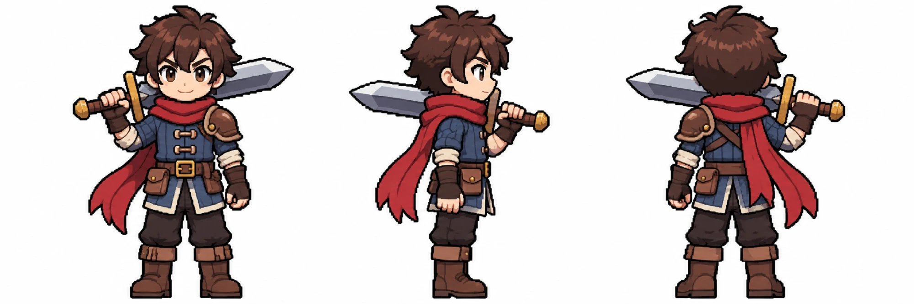
- กดรูปนักดาบเพื่อบันทึก แล้วแนบรูปนี้ทุกครั้งใน ChatGPT
- กดก๊อปปี้ของมอนตัวที่จะทำ แล้ววาง
- ทีละตัว ทีละรูป แล้วส่งรูปมาให้ Claude
- หรือให้ Codex ทำเอง:
อ่าน docs/codex/action/MOBS.md แล้วทำมอนสเตอร์ตามคิว ทีละรูป
shroomเสร็จแล้ว
Pixel art game character turnaround sheet in the SAME style as the attached picture (chibi pixel art, big head, thick dark outline, few flat colours with one shade step, bright colours). Show 3 full-body views of ONE monster in one row on a plain pure white background: 1) front view facing the viewer, 2) true side view facing RIGHT (pure profile), 3) back view. Same size in all three views, feet (or the lowest point) on the same ground line, evenly spaced, nothing touching or crossing into the next view, the whole body inside the picture. Picture size 1536x1024 landscape; the tallest view fills about 85% of the picture height. Neutral ready pose (not attacking), any weapon held the same way in every view. No shadow, no ground, no text, no labels, no frame, no particles or glow outside the body. Original design: do not copy any existing game, anime, film or comic monster. Monster: a small grumpy walking mushroom. Big purple cap with pale yellow spots, a stubby cream stem body with two short legs and tiny arms, angry little eyes under the cap rim, a few spores drifting from the cap. Cute but mean.
บันทึกรูปเป็น shroom.png
wolfเสร็จแล้ว
Pixel art game character turnaround sheet in the SAME style as the attached picture (chibi pixel art, big head, thick dark outline, few flat colours with one shade step, bright colours). Show 3 full-body views of ONE monster in one row on a plain pure white background: 1) front view facing the viewer, 2) true side view facing RIGHT (pure profile), 3) back view. Same size in all three views, feet (or the lowest point) on the same ground line, evenly spaced, nothing touching or crossing into the next view, the whole body inside the picture. Picture size 1536x1024 landscape; the tallest view fills about 85% of the picture height. Neutral ready pose (not attacking), any weapon held the same way in every view. No shadow, no ground, no text, no labels, no frame, no particles or glow outside the body. Original design: do not copy any existing game, anime, film or comic monster. Monster: a shadow wolf on four legs. Dark grey-blue fur with a lighter belly, glowing amber eyes, one torn ear, scars, a smoky dark tail tip, bared fangs. Lean and fast-looking. In the side view we see its whole body in profile.
บันทึกรูปเป็น wolf.png
goblin_archerเสร็จแล้ว
Pixel art game character turnaround sheet in the SAME style as the attached picture (chibi pixel art, big head, thick dark outline, few flat colours with one shade step, bright colours). Show 3 full-body views of ONE monster in one row on a plain pure white background: 1) front view facing the viewer, 2) true side view facing RIGHT (pure profile), 3) back view. Same size in all three views, feet (or the lowest point) on the same ground line, evenly spaced, nothing touching or crossing into the next view, the whole body inside the picture. Picture size 1536x1024 landscape; the tallest view fills about 85% of the picture height. Neutral ready pose (not attacking), any weapon held the same way in every view. No shadow, no ground, no text, no labels, no frame, no particles or glow outside the body. Original design: do not copy any existing game, anime, film or comic monster. Monster: a small goblin archer. Green skin, long pointy ears, a sly grin with one tooth, a hood made of big leaves, a patched brown tunic, a short wooden bow in the left hand, a quiver of crude arrows on the back. Arrows point the right way: the arrowhead at the front, the feathers at the back.
บันทึกรูปเป็น goblin_archer.png
boar_guardเสร็จแล้ว
Pixel art game character turnaround sheet in the SAME style as the attached picture (chibi pixel art, big head, thick dark outline, few flat colours with one shade step, bright colours). Show 3 full-body views of ONE monster in one row on a plain pure white background: 1) front view facing the viewer, 2) true side view facing RIGHT (pure profile), 3) back view. Same size in all three views, feet (or the lowest point) on the same ground line, evenly spaced, nothing touching or crossing into the next view, the whole body inside the picture. Picture size 1536x1024 landscape; the tallest view fills about 85% of the picture height. Neutral ready pose (not attacking), any weapon held the same way in every view. No shadow, no ground, no text, no labels, no frame, no particles or glow outside the body. Original design: do not copy any existing game, anime, film or comic monster. Monster: a big stocky boar-headed warrior standing on two legs. Brown bristly fur, two curved tusks, small fierce eyes, a fur vest and leather belt, a round wooden shield with an iron rim on the left arm, a heavy spiked wooden club in the right hand. Bulky and slow-looking.
บันทึกรูปเป็น boar_guard.png
skeletonเสร็จแล้ว
Pixel art game character turnaround sheet in the SAME style as the attached picture (chibi pixel art, big head, thick dark outline, few flat colours with one shade step, bright colours). Show 3 full-body views of ONE monster in one row on a plain pure white background: 1) front view facing the viewer, 2) true side view facing RIGHT (pure profile), 3) back view. Same size in all three views, feet (or the lowest point) on the same ground line, evenly spaced, nothing touching or crossing into the next view, the whole body inside the picture. Picture size 1536x1024 landscape; the tallest view fills about 85% of the picture height. Neutral ready pose (not attacking), any weapon held the same way in every view. No shadow, no ground, no text, no labels, no frame, no particles or glow outside the body. Original design: do not copy any existing game, anime, film or comic monster. Monster: a skeleton soldier from old ruins. Ivory bones, glowing blue eye lights, a rusty dented helmet, a tattered red cloth tied at the waist, a cracked round shield on the left arm, a chipped short sword in the right hand.
บันทึกรูปเป็น skeleton.png
wispเสร็จแล้ว
Pixel art game character turnaround sheet in the SAME style as the attached picture (chibi pixel art, big head, thick dark outline, few flat colours with one shade step, bright colours). Show 3 full-body views of ONE monster in one row on a plain pure white background: 1) front view facing the viewer, 2) true side view facing RIGHT (pure profile), 3) back view. Same size in all three views, feet (or the lowest point) on the same ground line, evenly spaced, nothing touching or crossing into the next view, the whole body inside the picture. Picture size 1536x1024 landscape; the tallest view fills about 85% of the picture height. Neutral ready pose (not attacking), any weapon held the same way in every view. No shadow, no ground, no text, no labels, no frame, no particles or glow outside the body. Original design: do not copy any existing game, anime, film or comic monster. Monster: a small floating spirit with no legs. A dark hooded little cloak whose bottom fades into ragged wisps, two glowing white eyes inside the hood, holding an old iron lantern with a blue flame. It floats a little above the ground line.
บันทึกรูปเป็น wisp.png
golemเสร็จแล้ว
Pixel art game character turnaround sheet in the SAME style as the attached picture (chibi pixel art, big head, thick dark outline, few flat colours with one shade step, bright colours). Show 3 full-body views of ONE monster in one row on a plain pure white background: 1) front view facing the viewer, 2) true side view facing RIGHT (pure profile), 3) back view. Same size in all three views, feet (or the lowest point) on the same ground line, evenly spaced, nothing touching or crossing into the next view, the whole body inside the picture. Picture size 1536x1024 landscape; the tallest view fills about 85% of the picture height. Neutral ready pose (not attacking), any weapon held the same way in every view. No shadow, no ground, no text, no labels, no frame, no particles or glow outside the body. Original design: do not copy any existing game, anime, film or comic monster. Monster: a big chunky golem made of mossy ruin stones. A square stone body and head, huge stone fists, short thick legs, green moss and small vines on the shoulders, a glowing teal rune carved in the chest and two teal eye slits.
บันทึกรูปเป็น golem.png
boss_treantเสร็จแล้ว
Pixel art game character turnaround sheet in the SAME style as the attached picture (chibi pixel art, big head, thick dark outline, few flat colours with one shade step, bright colours). Show 3 full-body views of ONE monster in one row on a plain pure white background: 1) front view facing the viewer, 2) true side view facing RIGHT (pure profile), 3) back view. Same size in all three views, feet (or the lowest point) on the same ground line, evenly spaced, nothing touching or crossing into the next view, the whole body inside the picture. Picture size 1536x1024 landscape; the tallest view fills about 85% of the picture height. Neutral ready pose (not attacking), any weapon held the same way in every view. No shadow, no ground, no text, no labels, no frame, no particles or glow outside the body. Original design: do not copy any existing game, anime, film or comic monster. Monster: a huge ancient tree giant, the forest boss. A dark twisted bark body, a face in the bark with glowing purple eyes and a jagged mouth, glowing purple cracks, two long branch arms ending in thorny claws, thick roots as feet, a crown of dead branches with a few leaves, small mushrooms growing on the shoulders. Menacing but still chibi.
บันทึกรูปเป็น boss_treant.png
krahangเสร็จแล้ว
Pixel art game character turnaround sheet in the SAME style as the attached picture (chibi pixel art, big head, thick dark outline, few flat colours with one shade step, bright colours). Show 3 full-body views of ONE monster in one row on a plain pure white background: 1) front view facing the viewer, 2) true side view facing RIGHT (pure profile), 3) back view. Same size in all three views, feet (or the lowest point) on the same ground line, evenly spaced, nothing touching or crossing into the next view, the whole body inside the picture. Picture size 1536x1024 landscape; the tallest view fills about 85% of the picture height. Neutral ready pose (not attacking), any weapon held the same way in every view. No shadow, no ground, no text, no labels, no frame, no particles or glow outside the body. Original design: do not copy any existing game, anime, film or comic monster. Monster: a Thai folklore flying ghost. A thin wild-haired man-ghost with grey-green skin and glowing eyes, wearing only a dark loincloth, flying with two round woven bamboo rice-winnowing baskets strapped to his arms as wings, sitting astride a long wooden rice pestle like a broom. Funny and creepy, not gory.
บันทึกรูปเป็น krahang.png
khamotเสร็จแล้ว
Pixel art game character turnaround sheet in the SAME style as the attached picture (chibi pixel art, big head, thick dark outline, few flat colours with one shade step, bright colours). Show 3 full-body views of ONE monster in one row on a plain pure white background: 1) front view facing the viewer, 2) true side view facing RIGHT (pure profile), 3) back view. Same size in all three views, feet (or the lowest point) on the same ground line, evenly spaced, nothing touching or crossing into the next view, the whole body inside the picture. Picture size 1536x1024 landscape; the tallest view fills about 85% of the picture height. Neutral ready pose (not attacking), any weapon held the same way in every view. No shadow, no ground, no text, no labels, no frame, no particles or glow outside the body. Original design: do not copy any existing game, anime, film or comic monster. Monster: a Thai swamp ghost-light. A floating ball of pale green fire with a faint grinning skull-like face inside the flame, a short flame tail behind it, no body. It floats above the ground line.
บันทึกรูปเป็น khamot.png
phraiเสร็จแล้ว
Pixel art game character turnaround sheet in the SAME style as the attached picture (chibi pixel art, big head, thick dark outline, few flat colours with one shade step, bright colours). Show 3 full-body views of ONE monster in one row on a plain pure white background: 1) front view facing the viewer, 2) true side view facing RIGHT (pure profile), 3) back view. Same size in all three views, feet (or the lowest point) on the same ground line, evenly spaced, nothing touching or crossing into the next view, the whole body inside the picture. Picture size 1536x1024 landscape; the tallest view fills about 85% of the picture height. Neutral ready pose (not attacking), any weapon held the same way in every view. No shadow, no ground, no text, no labels, no frame, no particles or glow outside the body. Original design: do not copy any existing game, anime, film or comic monster. Monster: a Thai river water spirit. A pale ghost woman with very long dripping black hair, glowing cyan eyes, an old faded Thai wrap skirt and shoulder cloth, water weeds tangled in the hair, bare feet in a small splash of water. Spooky but not gory, chibi.
บันทึกรูปเป็น phrai.png
pretเสร็จแล้ว
Pixel art game character turnaround sheet in the SAME style as the attached picture (chibi pixel art, big head, thick dark outline, few flat colours with one shade step, bright colours). Show 3 full-body views of ONE monster in one row on a plain pure white background: 1) front view facing the viewer, 2) true side view facing RIGHT (pure profile), 3) back view. Same size in all three views, feet (or the lowest point) on the same ground line, evenly spaced, nothing touching or crossing into the next view, the whole body inside the picture. Picture size 1536x1024 landscape; the tallest view fills about 85% of the picture height. Neutral ready pose (not attacking), any weapon held the same way in every view. No shadow, no ground, no text, no labels, no frame, no particles or glow outside the body. Original design: do not copy any existing game, anime, film or comic monster. Monster: a Thai hungry ghost (pret). Extremely tall and thin, grey skin, a long thin neck, a tiny pinhole mouth, sunken glowing eyes, very long thin arms and fingers, sparse hair, ragged grey cloth. Eerie, not gory.
บันทึกรูปเป็น pret.png
monkeyเสร็จแล้ว
Pixel art game character turnaround sheet in the SAME style as the attached picture (chibi pixel art, big head, thick dark outline, few flat colours with one shade step, bright colours). Show 3 full-body views of ONE monster in one row on a plain pure white background: 1) front view facing the viewer, 2) true side view facing RIGHT (pure profile), 3) back view. Same size in all three views, feet (or the lowest point) on the same ground line, evenly spaced, nothing touching or crossing into the next view, the whole body inside the picture. Picture size 1536x1024 landscape; the tallest view fills about 85% of the picture height. Neutral ready pose (not attacking), any weapon held the same way in every view. No shadow, no ground, no text, no labels, no frame, no particles or glow outside the body. Original design: do not copy any existing game, anime, film or comic monster. Monster: a mischievous macaque bandit. Brown-grey fur, a cheeky grin, a stolen red headcloth tied on the head, a small cloth bag of stones and fruit on the hip, one fruit held ready to throw in the right hand. Standing on two legs.
บันทึกรูปเป็น monkey.png
croc_guardเสร็จแล้ว
Pixel art game character turnaround sheet in the SAME style as the attached picture (chibi pixel art, big head, thick dark outline, few flat colours with one shade step, bright colours). Show 3 full-body views of ONE monster in one row on a plain pure white background: 1) front view facing the viewer, 2) true side view facing RIGHT (pure profile), 3) back view. Same size in all three views, feet (or the lowest point) on the same ground line, evenly spaced, nothing touching or crossing into the next view, the whole body inside the picture. Picture size 1536x1024 landscape; the tallest view fills about 85% of the picture height. Neutral ready pose (not attacking), any weapon held the same way in every view. No shadow, no ground, no text, no labels, no frame, no particles or glow outside the body. Original design: do not copy any existing game, anime, film or comic monster. Monster: a crocodile-headed warrior standing on two legs. Olive-green scales, yellow eyes, rows of teeth, old Thai soldier gear: a bronze-coloured chest plate and arm guards, a red waist sash, a long Thai glaive (a curved blade on a long pole) held upright in the right hand.
บันทึกรูปเป็น croc_guard.png
boss_chalawanเสร็จแล้ว
Pixel art game character turnaround sheet in the SAME style as the attached picture (chibi pixel art, big head, thick dark outline, few flat colours with one shade step, bright colours). Show 3 full-body views of ONE monster in one row on a plain pure white background: 1) front view facing the viewer, 2) true side view facing RIGHT (pure profile), 3) back view. Same size in all three views, feet (or the lowest point) on the same ground line, evenly spaced, nothing touching or crossing into the next view, the whole body inside the picture. Picture size 1536x1024 landscape; the tallest view fills about 85% of the picture height. Neutral ready pose (not attacking), any weapon held the same way in every view. No shadow, no ground, no text, no labels, no frame, no particles or glow outside the body. Original design: do not copy any existing game, anime, film or comic monster. Monster: Chalawan, the crocodile king from a Thai folk tale, the Thai map boss. A huge crocodile standing upright, jade-green scales with a pale belly, glowing gold eyes, a tall pointed gold Thai-style crown, gold armlets and a jewelled collar, a red and gold royal sash, a big curved Thai sword in the right hand, a long heavy tail. Proud and menacing, still chibi.
บันทึกรูปเป็น boss_chalawan.png
jiangshi
Pixel art game character turnaround sheet in the SAME style as the attached picture (chibi pixel art, big head, thick dark outline, few flat colours with one shade step, bright colours). Show 3 full-body views of ONE monster in one row on a plain pure white background: 1) front view facing the viewer, 2) true side view facing RIGHT (pure profile), 3) back view. Same size in all three views, feet (or the lowest point) on the same ground line, evenly spaced, nothing touching or crossing into the next view, the whole body inside the picture. Picture size 1536x1024 landscape; the tallest view fills about 85% of the picture height. Neutral ready pose (not attacking), any weapon held the same way in every view. No shadow, no ground, no text, no labels, no frame, no particles or glow outside the body. Original design: do not copy any existing game, anime, film or comic monster. Monster: a Chinese hopping vampire (jiangshi). Pale grey-green skin, a stiff body, arms stretched straight out in front, an old Qing-dynasty official's robe in dark blue with a square embroidered badge on the chest, a round official's hat, a yellow paper talisman with red brush marks stuck on the forehead hanging over the face, long fingernails. Creepy but cute.
บันทึกรูปเป็น jiangshi.png
paper_doll
Pixel art game character turnaround sheet in the SAME style as the attached picture (chibi pixel art, big head, thick dark outline, few flat colours with one shade step, bright colours). Show 3 full-body views of ONE monster in one row on a plain pure white background: 1) front view facing the viewer, 2) true side view facing RIGHT (pure profile), 3) back view. Same size in all three views, feet (or the lowest point) on the same ground line, evenly spaced, nothing touching or crossing into the next view, the whole body inside the picture. Picture size 1536x1024 landscape; the tallest view fills about 85% of the picture height. Neutral ready pose (not attacking), any weapon held the same way in every view. No shadow, no ground, no text, no labels, no frame, no particles or glow outside the body. Original design: do not copy any existing game, anime, film or comic monster. Monster: a small paper effigy servant come alive. A flat figure made of folded white and red paper with painted pink cheeks, a painted smile and black painted hair buns, paper sleeves that flutter, a little paper fan in the right hand, thin paper legs. Light and eerie, not gory.
บันทึกรูปเป็น paper_doll.png
terracotta_archer
Pixel art game character turnaround sheet in the SAME style as the attached picture (chibi pixel art, big head, thick dark outline, few flat colours with one shade step, bright colours). Show 3 full-body views of ONE monster in one row on a plain pure white background: 1) front view facing the viewer, 2) true side view facing RIGHT (pure profile), 3) back view. Same size in all three views, feet (or the lowest point) on the same ground line, evenly spaced, nothing touching or crossing into the next view, the whole body inside the picture. Picture size 1536x1024 landscape; the tallest view fills about 85% of the picture height. Neutral ready pose (not attacking), any weapon held the same way in every view. No shadow, no ground, no text, no labels, no frame, no particles or glow outside the body. Original design: do not copy any existing game, anime, film or comic monster. Monster: an animated clay soldier archer. Body of reddish-brown terracotta with cracks and chipped edges, a topknot, layered clay armour plates, a wooden crossbow held in both hands, a quiver of bolts on the hip, small glowing amber eyes. The crossbow bolts point the right way: the head at the front.
บันทึกรูปเป็น terracotta_archer.png
terracotta_general
Pixel art game character turnaround sheet in the SAME style as the attached picture (chibi pixel art, big head, thick dark outline, few flat colours with one shade step, bright colours). Show 3 full-body views of ONE monster in one row on a plain pure white background: 1) front view facing the viewer, 2) true side view facing RIGHT (pure profile), 3) back view. Same size in all three views, feet (or the lowest point) on the same ground line, evenly spaced, nothing touching or crossing into the next view, the whole body inside the picture. Picture size 1536x1024 landscape; the tallest view fills about 85% of the picture height. Neutral ready pose (not attacking), any weapon held the same way in every view. No shadow, no ground, no text, no labels, no frame, no particles or glow outside the body. Original design: do not copy any existing game, anime, film or comic monster. Monster: a big animated clay general. Bulky reddish-brown terracotta body with cracks, a tall general's headdress, heavy layered clay scale armour with bronze-green studs, a long bronze halberd (a spear with a side blade) held upright in the right hand, glowing amber eyes, a stern face. Heavy and slow-looking.
บันทึกรูปเป็น terracotta_general.png
fox_spirit
Pixel art game character turnaround sheet in the SAME style as the attached picture (chibi pixel art, big head, thick dark outline, few flat colours with one shade step, bright colours). Show 3 full-body views of ONE monster in one row on a plain pure white background: 1) front view facing the viewer, 2) true side view facing RIGHT (pure profile), 3) back view. Same size in all three views, feet (or the lowest point) on the same ground line, evenly spaced, nothing touching or crossing into the next view, the whole body inside the picture. Picture size 1536x1024 landscape; the tallest view fills about 85% of the picture height. Neutral ready pose (not attacking), any weapon held the same way in every view. No shadow, no ground, no text, no labels, no frame, no particles or glow outside the body. Original design: do not copy any existing game, anime, film or comic monster. Monster: a sly fox demon standing on its hind legs. White fur with pale gold tips, three big fluffy tails, narrow glowing violet eyes, a red tassel charm hanging from its neck, small floating blue fox-fire flames by its paws. An animal, not a human woman. Elegant and tricky.
บันทึกรูปเป็น fox_spirit.png
toad_demon
Pixel art game character turnaround sheet in the SAME style as the attached picture (chibi pixel art, big head, thick dark outline, few flat colours with one shade step, bright colours). Show 3 full-body views of ONE monster in one row on a plain pure white background: 1) front view facing the viewer, 2) true side view facing RIGHT (pure profile), 3) back view. Same size in all three views, feet (or the lowest point) on the same ground line, evenly spaced, nothing touching or crossing into the next view, the whole body inside the picture. Picture size 1536x1024 landscape; the tallest view fills about 85% of the picture height. Neutral ready pose (not attacking), any weapon held the same way in every view. No shadow, no ground, no text, no labels, no frame, no particles or glow outside the body. Original design: do not copy any existing game, anime, film or comic monster. Monster: a fat toad demon standing on two short legs. Warty olive-green skin with a yellow belly, big bulging orange eyes, a huge wide mouth with a long sticky tongue curled inside, a torn brown cloth vest, a small wooden club in one hand. Bulky and gross-cute, not scary.
บันทึกรูปเป็น toad_demon.png
boss_nian
Pixel art game character turnaround sheet in the SAME style as the attached picture (chibi pixel art, big head, thick dark outline, few flat colours with one shade step, bright colours). Show 3 full-body views of ONE monster in one row on a plain pure white background: 1) front view facing the viewer, 2) true side view facing RIGHT (pure profile), 3) back view. Same size in all three views, feet (or the lowest point) on the same ground line, evenly spaced, nothing touching or crossing into the next view, the whole body inside the picture. Picture size 1536x1024 landscape; the tallest view fills about 85% of the picture height. Neutral ready pose (not attacking), any weapon held the same way in every view. No shadow, no ground, no text, no labels, no frame, no particles or glow outside the body. Original design: do not copy any existing game, anime, film or comic monster. Monster: Nian, the New Year beast from Chinese folklore, the China map boss. A huge lion-like beast standing on four legs with a big round head, a single curved horn, a wide toothy mouth, bulging eyes, a thick red and gold mane, a red scaly back with gold spikes, a fluffy tail, firecracker-red colours. Fierce but still chibi, like a festival beast.
บันทึกรูปเป็น boss_nian.png
เฟรมขยับของมอน (ท่าละ 1 รูป)
แนบรูปของมอนตัวนั้น (กดรูปเล็กเพื่อบันทึก) แล้วก๊อปพรอมต์ทีละท่า
เห็ดพิษ shroom
shroom_walk.pngเสร็จแล้ว
Animation frames for a 2D action game, ONE picture. The monster is the small grumpy purple-capped walking mushroom, exactly as in the attached picture: same face, colours, outfit and proportions, same art style (clean chibi cel-shaded illustration, thick dark outlines, flat colours). Side view facing RIGHT in every frame, like the middle view of the attached picture. Action: a bouncy waddle: it hops forward on its stubby legs, the cap squashing down on landing and stretching up on the hop. A smooth loop: frame 6 flows back into frame 1. It walks in place (it does not travel across the cells). LAYOUT: 6 frames in a 3 x 2 grid, read left to right, top row first. Each frame sits in its own square cell of equal size with empty white space around the figure; nothing crosses into the next cell; the whole body stays inside its cell. Same scale in every frame (the same size as in frame 1); the feet (or the lowest point) on the same ground line in every cell. Every frame must be a clearly DIFFERENT pose. Plain pure white background, no grid lines, no numbers, no text, no shadow, no ground, no effects, no motion lines, no dust. Picture size 1536x1024 (each cell 512x512). Keep the full generated size. Do ONLY this one picture now.
shroom_attack.pngเสร็จแล้ว
Animation frames for a 2D action game, ONE picture. The monster is the small grumpy purple-capped walking mushroom, exactly as in the attached picture: same face, colours, outfit and proportions, same art style (clean chibi cel-shaded illustration, thick dark outlines, flat colours). Side view facing RIGHT in every frame, like the middle view of the attached picture. Action: it squashes down low, then springs up and puffs its cap forward to spit spores at the enemy in front of it, then settles back. Frames 1 and 6 show the ready pose; frames 2-3 are the wind-up, frame 4 is the hit, frame 5 the follow-through. LAYOUT: 6 frames in a 3 x 2 grid, read left to right, top row first. Each frame sits in its own square cell of equal size with empty white space around the figure; nothing crosses into the next cell; the whole body stays inside its cell. Same scale in every frame (the same size as in frame 1); the feet (or the lowest point) on the same ground line in every cell. Every frame must be a clearly DIFFERENT pose. Plain pure white background, no grid lines, no numbers, no text, no shadow, no ground, no effects, no motion lines, no dust. Picture size 1536x1024 (each cell 512x512). Keep the full generated size. Do ONLY this one picture now.
shroom_death.pngเสร็จแล้ว
Animation frames for a 2D action game, ONE picture. The monster is the small grumpy purple-capped walking mushroom, exactly as in the attached picture: same face, colours, outfit and proportions, same art style (clean chibi cel-shaded illustration, thick dark outlines, flat colours). Side view facing RIGHT in every frame, like the middle view of the attached picture. Action: it gets hit, wobbles, its cap droops and it shrinks and flops over on its side, lying still in the last frame. LAYOUT: 6 frames in a 3 x 2 grid, read left to right, top row first. Each frame sits in its own square cell of equal size with empty white space around the figure; nothing crosses into the next cell; the whole body stays inside its cell. Same scale in every frame (the same size as in frame 1); the feet (or the lowest point) on the same ground line in every cell. Every frame must be a clearly DIFFERENT pose. Plain pure white background, no grid lines, no numbers, no text, no shadow, no ground, no effects, no motion lines, no dust. Picture size 1536x1024 (each cell 512x512). Keep the full generated size. Do ONLY this one picture now.
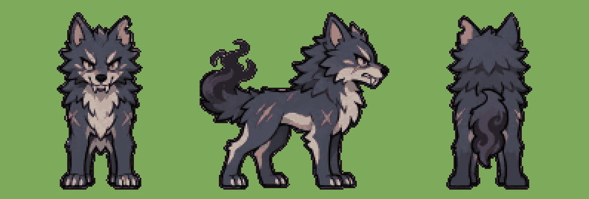
หมาป่าเงา wolf
wolf_walk.pngเสร็จแล้ว
Animation frames for a 2D action game, ONE picture. The monster is the shadow wolf on four legs, exactly as in the attached picture: same face, colours, outfit and proportions, same art style (clean chibi cel-shaded illustration, thick dark outlines, flat colours). Side view facing RIGHT in every frame, like the middle view of the attached picture. Action: a fast trot on four legs, legs moving in a clear gait, the smoky tail swaying. A smooth loop: frame 6 flows back into frame 1. It walks in place (it does not travel across the cells). LAYOUT: 6 frames in a 3 x 2 grid, read left to right, top row first. Each frame sits in its own square cell of equal size with empty white space around the figure; nothing crosses into the next cell; the whole body stays inside its cell. Same scale in every frame (the same size as in frame 1); the feet (or the lowest point) on the same ground line in every cell. Every frame must be a clearly DIFFERENT pose. Plain pure white background, no grid lines, no numbers, no text, no shadow, no ground, no effects, no motion lines, no dust. Picture size 1536x1024 (each cell 512x512). Keep the full generated size. Do ONLY this one picture now.
wolf_attack.pngเสร็จแล้ว
Animation frames for a 2D action game, ONE picture. The monster is the shadow wolf on four legs, exactly as in the attached picture: same face, colours, outfit and proportions, same art style (clean chibi cel-shaded illustration, thick dark outlines, flat colours). Side view facing RIGHT in every frame, like the middle view of the attached picture. Action: it crouches low on its front legs, then lunges forward with jaws wide open for a bite (the furthest reach in frame 4), then lands back in the ready stance. Frames 1 and 6 show the ready pose; frames 2-3 are the wind-up, frame 4 is the hit, frame 5 the follow-through. LAYOUT: 6 frames in a 3 x 2 grid, read left to right, top row first. Each frame sits in its own square cell of equal size with empty white space around the figure; nothing crosses into the next cell; the whole body stays inside its cell. Same scale in every frame (the same size as in frame 1); the feet (or the lowest point) on the same ground line in every cell. Every frame must be a clearly DIFFERENT pose. Plain pure white background, no grid lines, no numbers, no text, no shadow, no ground, no effects, no motion lines, no dust. Picture size 1536x1024 (each cell 512x512). Keep the full generated size. Do ONLY this one picture now.
wolf_death.pngเสร็จแล้ว
Animation frames for a 2D action game, ONE picture. The monster is the shadow wolf on four legs, exactly as in the attached picture: same face, colours, outfit and proportions, same art style (clean chibi cel-shaded illustration, thick dark outlines, flat colours). Side view facing RIGHT in every frame, like the middle view of the attached picture. Action: it yelps and recoils, its legs buckle and it collapses onto its side, lying still in the last frame. LAYOUT: 6 frames in a 3 x 2 grid, read left to right, top row first. Each frame sits in its own square cell of equal size with empty white space around the figure; nothing crosses into the next cell; the whole body stays inside its cell. Same scale in every frame (the same size as in frame 1); the feet (or the lowest point) on the same ground line in every cell. Every frame must be a clearly DIFFERENT pose. Plain pure white background, no grid lines, no numbers, no text, no shadow, no ground, no effects, no motion lines, no dust. Picture size 1536x1024 (each cell 512x512). Keep the full generated size. Do ONLY this one picture now.
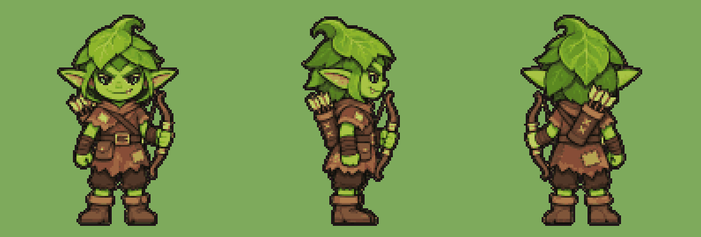
ก็อบลินนักธนู goblin_archer
goblin_archer_walk.pngเสร็จแล้ว
Animation frames for a 2D action game, ONE picture. The monster is the small goblin archer with the leaf hood and the short bow, exactly as in the attached picture: same face, colours, outfit and proportions, same art style (clean chibi cel-shaded illustration, thick dark outlines, flat colours). Side view facing RIGHT in every frame, like the middle view of the attached picture. Action: a sneaky quick walk, knees bent, the bow held low. A smooth loop: frame 6 flows back into frame 1. It walks in place (it does not travel across the cells). LAYOUT: 6 frames in a 3 x 2 grid, read left to right, top row first. Each frame sits in its own square cell of equal size with empty white space around the figure; nothing crosses into the next cell; the whole body stays inside its cell. Same scale in every frame (the same size as in frame 1); the feet (or the lowest point) on the same ground line in every cell. Every frame must be a clearly DIFFERENT pose. Plain pure white background, no grid lines, no numbers, no text, no shadow, no ground, no effects, no motion lines, no dust. Picture size 1536x1024 (each cell 512x512). Keep the full generated size. Do ONLY this one picture now.
goblin_archer_attack.pngเสร็จแล้ว
Animation frames for a 2D action game, ONE picture. The monster is the small goblin archer with the leaf hood and the short bow, exactly as in the attached picture: same face, colours, outfit and proportions, same art style (clean chibi cel-shaded illustration, thick dark outlines, flat colours). Side view facing RIGHT in every frame, like the middle view of the attached picture. Action: it pulls an arrow from the quiver, nocks it, draws the bow back and aims forward, releases (the arrow leaves the frame, the bowstring snaps forward in frame 4), then lowers the bow; arrows always point forward with the head at the front. Frames 1 and 6 show the ready pose; frames 2-3 are the wind-up, frame 4 is the hit, frame 5 the follow-through. LAYOUT: 6 frames in a 3 x 2 grid, read left to right, top row first. Each frame sits in its own square cell of equal size with empty white space around the figure; nothing crosses into the next cell; the whole body stays inside its cell. Same scale in every frame (the same size as in frame 1); the feet (or the lowest point) on the same ground line in every cell. Every frame must be a clearly DIFFERENT pose. Plain pure white background, no grid lines, no numbers, no text, no shadow, no ground, no effects, no motion lines, no dust. Picture size 1536x1024 (each cell 512x512). Keep the full generated size. Do ONLY this one picture now.
goblin_archer_death.pngเสร็จแล้ว
Animation frames for a 2D action game, ONE picture. The monster is the small goblin archer with the leaf hood and the short bow, exactly as in the attached picture: same face, colours, outfit and proportions, same art style (clean chibi cel-shaded illustration, thick dark outlines, flat colours). Side view facing RIGHT in every frame, like the middle view of the attached picture. Action: it gets hit, staggers back, drops the bow and falls on its back, lying still in the last frame. LAYOUT: 6 frames in a 3 x 2 grid, read left to right, top row first. Each frame sits in its own square cell of equal size with empty white space around the figure; nothing crosses into the next cell; the whole body stays inside its cell. Same scale in every frame (the same size as in frame 1); the feet (or the lowest point) on the same ground line in every cell. Every frame must be a clearly DIFFERENT pose. Plain pure white background, no grid lines, no numbers, no text, no shadow, no ground, no effects, no motion lines, no dust. Picture size 1536x1024 (each cell 512x512). Keep the full generated size. Do ONLY this one picture now.
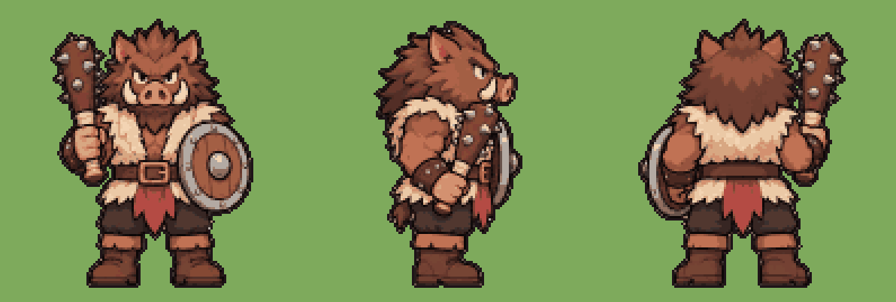
นักรบหมูป่า boar_guard
boar_guard_walk.pngเสร็จแล้ว
Animation frames for a 2D action game, ONE picture. The monster is the big boar-headed warrior with the round shield and spiked club, exactly as in the attached picture: same face, colours, outfit and proportions, same art style (clean chibi cel-shaded illustration, thick dark outlines, flat colours). Side view facing RIGHT in every frame, like the middle view of the attached picture. Action: a heavy stomping walk, shoulders rocking, the shield held in front, the club resting on the shoulder. A smooth loop: frame 6 flows back into frame 1. It walks in place (it does not travel across the cells). LAYOUT: 6 frames in a 3 x 2 grid, read left to right, top row first. Each frame sits in its own square cell of equal size with empty white space around the figure; nothing crosses into the next cell; the whole body stays inside its cell. Same scale in every frame (the same size as in frame 1); the feet (or the lowest point) on the same ground line in every cell. Every frame must be a clearly DIFFERENT pose. Plain pure white background, no grid lines, no numbers, no text, no shadow, no ground, no effects, no motion lines, no dust. Picture size 1536x1024 (each cell 512x512). Keep the full generated size. Do ONLY this one picture now.
boar_guard_attack.pngเสร็จแล้ว
Animation frames for a 2D action game, ONE picture. The monster is the big boar-headed warrior with the round shield and spiked club, exactly as in the attached picture: same face, colours, outfit and proportions, same art style (clean chibi cel-shaded illustration, thick dark outlines, flat colours). Side view facing RIGHT in every frame, like the middle view of the attached picture. Action: it raises the spiked club high overhead, then smashes it down hard in front of it (the club hits the ground in frame 4), then lifts it back up. Frames 1 and 6 show the ready pose; frames 2-3 are the wind-up, frame 4 is the hit, frame 5 the follow-through. LAYOUT: 6 frames in a 3 x 2 grid, read left to right, top row first. Each frame sits in its own square cell of equal size with empty white space around the figure; nothing crosses into the next cell; the whole body stays inside its cell. Same scale in every frame (the same size as in frame 1); the feet (or the lowest point) on the same ground line in every cell. Every frame must be a clearly DIFFERENT pose. Plain pure white background, no grid lines, no numbers, no text, no shadow, no ground, no effects, no motion lines, no dust. Picture size 1536x1024 (each cell 512x512). Keep the full generated size. Do ONLY this one picture now.
boar_guard_death.pngเสร็จแล้ว
Animation frames for a 2D action game, ONE picture. The monster is the big boar-headed warrior with the round shield and spiked club, exactly as in the attached picture: same face, colours, outfit and proportions, same art style (clean chibi cel-shaded illustration, thick dark outlines, flat colours). Side view facing RIGHT in every frame, like the middle view of the attached picture. Action: it gets hit, staggers, drops to one knee, the club and shield fall and it topples forward, lying still in the last frame. LAYOUT: 6 frames in a 3 x 2 grid, read left to right, top row first. Each frame sits in its own square cell of equal size with empty white space around the figure; nothing crosses into the next cell; the whole body stays inside its cell. Same scale in every frame (the same size as in frame 1); the feet (or the lowest point) on the same ground line in every cell. Every frame must be a clearly DIFFERENT pose. Plain pure white background, no grid lines, no numbers, no text, no shadow, no ground, no effects, no motion lines, no dust. Picture size 1536x1024 (each cell 512x512). Keep the full generated size. Do ONLY this one picture now.
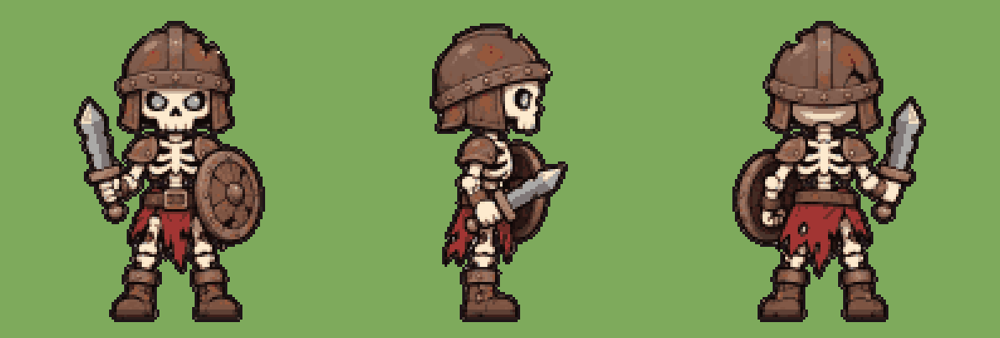
ทหารโครงกระดูก skeleton
skeleton_walk.pngเสร็จแล้ว
Animation frames for a 2D action game, ONE picture. The monster is the skeleton soldier with the rusty helmet, cracked round shield and chipped sword, exactly as in the attached picture: same face, colours, outfit and proportions, same art style (clean chibi cel-shaded illustration, thick dark outlines, flat colours). Side view facing RIGHT in every frame, like the middle view of the attached picture. Action: a stiff rattling march, bones jerking a little at each step, shield held in front. A smooth loop: frame 6 flows back into frame 1. It walks in place (it does not travel across the cells). LAYOUT: 6 frames in a 3 x 2 grid, read left to right, top row first. Each frame sits in its own square cell of equal size with empty white space around the figure; nothing crosses into the next cell; the whole body stays inside its cell. Same scale in every frame (the same size as in frame 1); the feet (or the lowest point) on the same ground line in every cell. Every frame must be a clearly DIFFERENT pose. Plain pure white background, no grid lines, no numbers, no text, no shadow, no ground, no effects, no motion lines, no dust. Picture size 1536x1024 (each cell 512x512). Keep the full generated size. Do ONLY this one picture now.
skeleton_attack.pngเสร็จแล้ว
Animation frames for a 2D action game, ONE picture. The monster is the skeleton soldier with the rusty helmet, cracked round shield and chipped sword, exactly as in the attached picture: same face, colours, outfit and proportions, same art style (clean chibi cel-shaded illustration, thick dark outlines, flat colours). Side view facing RIGHT in every frame, like the middle view of the attached picture. Action: it pulls the sword back behind the shield, then steps in and slashes forward in a wide arc (the blade furthest forward in frame 4), then returns behind the shield. Frames 1 and 6 show the ready pose; frames 2-3 are the wind-up, frame 4 is the hit, frame 5 the follow-through. LAYOUT: 6 frames in a 3 x 2 grid, read left to right, top row first. Each frame sits in its own square cell of equal size with empty white space around the figure; nothing crosses into the next cell; the whole body stays inside its cell. Same scale in every frame (the same size as in frame 1); the feet (or the lowest point) on the same ground line in every cell. Every frame must be a clearly DIFFERENT pose. Plain pure white background, no grid lines, no numbers, no text, no shadow, no ground, no effects, no motion lines, no dust. Picture size 1536x1024 (each cell 512x512). Keep the full generated size. Do ONLY this one picture now.
skeleton_death.pngเสร็จแล้ว
Animation frames for a 2D action game, ONE picture. The monster is the skeleton soldier with the rusty helmet, cracked round shield and chipped sword, exactly as in the attached picture: same face, colours, outfit and proportions, same art style (clean chibi cel-shaded illustration, thick dark outlines, flat colours). Side view facing RIGHT in every frame, like the middle view of the attached picture. Action: it gets hit and falls apart: the bones come loose and collapse into a pile of bones with the helmet on top in the last frame. LAYOUT: 6 frames in a 3 x 2 grid, read left to right, top row first. Each frame sits in its own square cell of equal size with empty white space around the figure; nothing crosses into the next cell; the whole body stays inside its cell. Same scale in every frame (the same size as in frame 1); the feet (or the lowest point) on the same ground line in every cell. Every frame must be a clearly DIFFERENT pose. Plain pure white background, no grid lines, no numbers, no text, no shadow, no ground, no effects, no motion lines, no dust. Picture size 1536x1024 (each cell 512x512). Keep the full generated size. Do ONLY this one picture now.
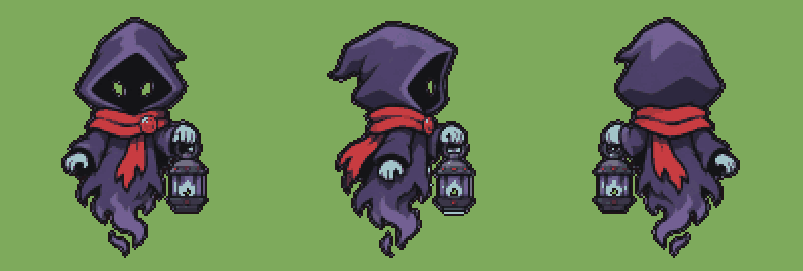
ภูตตะเกียง wisp
wisp_walk.pngเสร็จแล้ว
Animation frames for a 2D action game, ONE picture. The monster is the small floating hooded spirit holding a blue-flame lantern, exactly as in the attached picture: same face, colours, outfit and proportions, same art style (clean chibi cel-shaded illustration, thick dark outlines, flat colours). Side view facing RIGHT in every frame, like the middle view of the attached picture. Action: it floats forward, bobbing gently up and down, the ragged cloak tail rippling. A smooth loop: frame 6 flows back into frame 1. It walks in place (it does not travel across the cells). LAYOUT: 6 frames in a 3 x 2 grid, read left to right, top row first. Each frame sits in its own square cell of equal size with empty white space around the figure; nothing crosses into the next cell; the whole body stays inside its cell. Same scale in every frame (the same size as in frame 1); the feet (or the lowest point) on the same ground line in every cell. Every frame must be a clearly DIFFERENT pose. Plain pure white background, no grid lines, no numbers, no text, no shadow, no ground, no effects, no motion lines, no dust. Picture size 1536x1024 (each cell 512x512). Keep the full generated size. Do ONLY this one picture now.
wisp_attack.pngเสร็จแล้ว
Animation frames for a 2D action game, ONE picture. The monster is the small floating hooded spirit holding a blue-flame lantern, exactly as in the attached picture: same face, colours, outfit and proportions, same art style (clean chibi cel-shaded illustration, thick dark outlines, flat colours). Side view facing RIGHT in every frame, like the middle view of the attached picture. Action: it rears back, then swings the lantern forward and thrusts it at the enemy (the lantern furthest forward in frame 4), then floats back. Frames 1 and 6 show the ready pose; frames 2-3 are the wind-up, frame 4 is the hit, frame 5 the follow-through. LAYOUT: 6 frames in a 3 x 2 grid, read left to right, top row first. Each frame sits in its own square cell of equal size with empty white space around the figure; nothing crosses into the next cell; the whole body stays inside its cell. Same scale in every frame (the same size as in frame 1); the feet (or the lowest point) on the same ground line in every cell. Every frame must be a clearly DIFFERENT pose. Plain pure white background, no grid lines, no numbers, no text, no shadow, no ground, no effects, no motion lines, no dust. Picture size 1536x1024 (each cell 512x512). Keep the full generated size. Do ONLY this one picture now.
wisp_death.pngเสร็จแล้ว
Animation frames for a 2D action game, ONE picture. The monster is the small floating hooded spirit holding a blue-flame lantern, exactly as in the attached picture: same face, colours, outfit and proportions, same art style (clean chibi cel-shaded illustration, thick dark outlines, flat colours). Side view facing RIGHT in every frame, like the middle view of the attached picture. Action: it gets hit, flickers, the cloak crumples inward and collapses empty to the ground with the lantern lying beside it in the last frame. LAYOUT: 6 frames in a 3 x 2 grid, read left to right, top row first. Each frame sits in its own square cell of equal size with empty white space around the figure; nothing crosses into the next cell; the whole body stays inside its cell. Same scale in every frame (the same size as in frame 1); the feet (or the lowest point) on the same ground line in every cell. Every frame must be a clearly DIFFERENT pose. Plain pure white background, no grid lines, no numbers, no text, no shadow, no ground, no effects, no motion lines, no dust. Picture size 1536x1024 (each cell 512x512). Keep the full generated size. Do ONLY this one picture now.
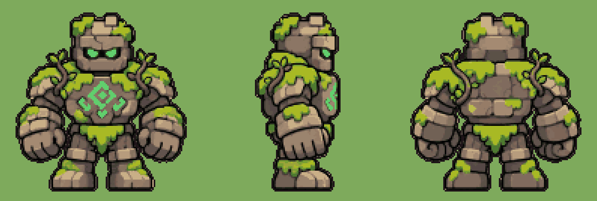
โกเลมหิน golem
golem_walk.pngเสร็จแล้ว
Animation frames for a 2D action game, ONE picture. The monster is the big chunky mossy stone golem with the glowing teal rune, exactly as in the attached picture: same face, colours, outfit and proportions, same art style (clean chibi cel-shaded illustration, thick dark outlines, flat colours). Side view facing RIGHT in every frame, like the middle view of the attached picture. Action: a slow heavy walk, the whole body rocking from side to side at each step. A smooth loop: frame 6 flows back into frame 1. It walks in place (it does not travel across the cells). LAYOUT: 6 frames in a 3 x 2 grid, read left to right, top row first. Each frame sits in its own square cell of equal size with empty white space around the figure; nothing crosses into the next cell; the whole body stays inside its cell. Same scale in every frame (the same size as in frame 1); the feet (or the lowest point) on the same ground line in every cell. Every frame must be a clearly DIFFERENT pose. Plain pure white background, no grid lines, no numbers, no text, no shadow, no ground, no effects, no motion lines, no dust. Picture size 1536x1024 (each cell 512x512). Keep the full generated size. Do ONLY this one picture now.
golem_attack.pngเสร็จแล้ว
Animation frames for a 2D action game, ONE picture. The monster is the big chunky mossy stone golem with the glowing teal rune, exactly as in the attached picture: same face, colours, outfit and proportions, same art style (clean chibi cel-shaded illustration, thick dark outlines, flat colours). Side view facing RIGHT in every frame, like the middle view of the attached picture. Action: it pulls one huge stone fist far back, then punches forward hard with its whole weight (the fist furthest forward in frame 4), then pulls back to the ready stance. Frames 1 and 6 show the ready pose; frames 2-3 are the wind-up, frame 4 is the hit, frame 5 the follow-through. LAYOUT: 6 frames in a 3 x 2 grid, read left to right, top row first. Each frame sits in its own square cell of equal size with empty white space around the figure; nothing crosses into the next cell; the whole body stays inside its cell. Same scale in every frame (the same size as in frame 1); the feet (or the lowest point) on the same ground line in every cell. Every frame must be a clearly DIFFERENT pose. Plain pure white background, no grid lines, no numbers, no text, no shadow, no ground, no effects, no motion lines, no dust. Picture size 1536x1024 (each cell 512x512). Keep the full generated size. Do ONLY this one picture now.
golem_death.pngเสร็จแล้ว
Animation frames for a 2D action game, ONE picture. The monster is the big chunky mossy stone golem with the glowing teal rune, exactly as in the attached picture: same face, colours, outfit and proportions, same art style (clean chibi cel-shaded illustration, thick dark outlines, flat colours). Side view facing RIGHT in every frame, like the middle view of the attached picture. Action: it gets hit, cracks, the rune dims and it crumbles down into a heap of mossy stones in the last frame. LAYOUT: 6 frames in a 3 x 2 grid, read left to right, top row first. Each frame sits in its own square cell of equal size with empty white space around the figure; nothing crosses into the next cell; the whole body stays inside its cell. Same scale in every frame (the same size as in frame 1); the feet (or the lowest point) on the same ground line in every cell. Every frame must be a clearly DIFFERENT pose. Plain pure white background, no grid lines, no numbers, no text, no shadow, no ground, no effects, no motion lines, no dust. Picture size 1536x1024 (each cell 512x512). Keep the full generated size. Do ONLY this one picture now.
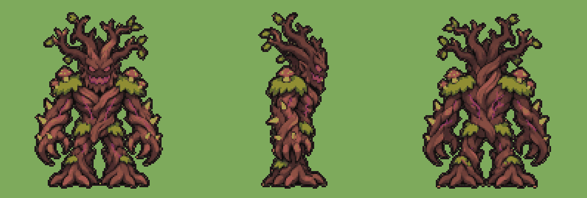
บอสต้นไม้อสูร boss_treant
boss_treant_walk.pngเสร็จแล้ว
Animation frames for a 2D action game, ONE picture. The monster is the huge ancient tree giant boss, exactly as in the attached picture: same face, colours, outfit and proportions, same art style (clean chibi cel-shaded illustration, thick dark outlines, flat colours). Side view facing RIGHT in every frame, like the middle view of the attached picture. Action: a slow lumbering walk on its thick roots, branches swaying. A smooth loop: frame 6 flows back into frame 1. It walks in place (it does not travel across the cells). LAYOUT: 6 frames in a 3 x 2 grid, read left to right, top row first. Each frame sits in its own square cell of equal size with empty white space around the figure; nothing crosses into the next cell; the whole body stays inside its cell. Same scale in every frame (the same size as in frame 1); the feet (or the lowest point) on the same ground line in every cell. Every frame must be a clearly DIFFERENT pose. Plain pure white background, no grid lines, no numbers, no text, no shadow, no ground, no effects, no motion lines, no dust. Picture size 1536x1024 (each cell 512x512). Keep the full generated size. Do ONLY this one picture now.
boss_treant_attack.pngเสร็จแล้ว
Animation frames for a 2D action game, ONE picture. The monster is the huge ancient tree giant boss, exactly as in the attached picture: same face, colours, outfit and proportions, same art style (clean chibi cel-shaded illustration, thick dark outlines, flat colours). Side view facing RIGHT in every frame, like the middle view of the attached picture. Action: it rears back with both branch arms raised, then sweeps both thorny claws down and forward in front of it (the claws furthest forward in frame 4), then rises back up. Frames 1 and 6 show the ready pose; frames 2-3 are the wind-up, frame 4 is the hit, frame 5 the follow-through. LAYOUT: 6 frames in a 3 x 2 grid, read left to right, top row first. Each frame sits in its own square cell of equal size with empty white space around the figure; nothing crosses into the next cell; the whole body stays inside its cell. Same scale in every frame (the same size as in frame 1); the feet (or the lowest point) on the same ground line in every cell. Every frame must be a clearly DIFFERENT pose. Plain pure white background, no grid lines, no numbers, no text, no shadow, no ground, no effects, no motion lines, no dust. Picture size 1536x1024 (each cell 512x512). Keep the full generated size. Do ONLY this one picture now.
boss_treant_death.pngเสร็จแล้ว
Animation frames for a 2D action game, ONE picture. The monster is the huge ancient tree giant boss, exactly as in the attached picture: same face, colours, outfit and proportions, same art style (clean chibi cel-shaded illustration, thick dark outlines, flat colours). Side view facing RIGHT in every frame, like the middle view of the attached picture. Action: it gets hit, creaks and bends, then topples over and crashes to the ground, lying still in the last frame. LAYOUT: 6 frames in a 3 x 2 grid, read left to right, top row first. Each frame sits in its own square cell of equal size with empty white space around the figure; nothing crosses into the next cell; the whole body stays inside its cell. Same scale in every frame (the same size as in frame 1); the feet (or the lowest point) on the same ground line in every cell. Every frame must be a clearly DIFFERENT pose. Plain pure white background, no grid lines, no numbers, no text, no shadow, no ground, no effects, no motion lines, no dust. Picture size 1536x1024 (each cell 512x512). Keep the full generated size. Do ONLY this one picture now.
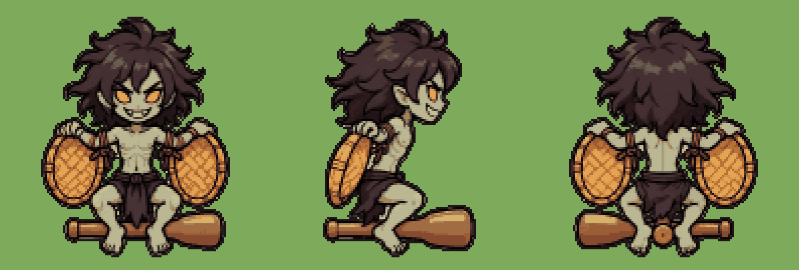
ผีกระหัง krahang
krahang_walk.pngเสร็จแล้ว
Animation frames for a 2D action game, ONE picture. The monster is the Thai flying ghost with the winnowing-basket wings riding the rice pestle, exactly as in the attached picture: same face, colours, outfit and proportions, same art style (clean chibi cel-shaded illustration, thick dark outlines, flat colours). Side view facing RIGHT in every frame, like the middle view of the attached picture. Action: it flies forward on the pestle, flapping the two basket wings up and down in a clear flap cycle. A smooth loop: frame 6 flows back into frame 1. It walks in place (it does not travel across the cells). LAYOUT: 6 frames in a 3 x 2 grid, read left to right, top row first. Each frame sits in its own square cell of equal size with empty white space around the figure; nothing crosses into the next cell; the whole body stays inside its cell. Same scale in every frame (the same size as in frame 1); the feet (or the lowest point) on the same ground line in every cell. Every frame must be a clearly DIFFERENT pose. Plain pure white background, no grid lines, no numbers, no text, no shadow, no ground, no effects, no motion lines, no dust. Picture size 1536x1024 (each cell 512x512). Keep the full generated size. Do ONLY this one picture now.
krahang_attack.pngเสร็จแล้ว
Animation frames for a 2D action game, ONE picture. The monster is the Thai flying ghost with the winnowing-basket wings riding the rice pestle, exactly as in the attached picture: same face, colours, outfit and proportions, same art style (clean chibi cel-shaded illustration, thick dark outlines, flat colours). Side view facing RIGHT in every frame, like the middle view of the attached picture. Action: it pulls back, then dives forward on the pestle swinging both basket wings forward to strike (furthest forward in frame 4), then flies back up. Frames 1 and 6 show the ready pose; frames 2-3 are the wind-up, frame 4 is the hit, frame 5 the follow-through. LAYOUT: 6 frames in a 3 x 2 grid, read left to right, top row first. Each frame sits in its own square cell of equal size with empty white space around the figure; nothing crosses into the next cell; the whole body stays inside its cell. Same scale in every frame (the same size as in frame 1); the feet (or the lowest point) on the same ground line in every cell. Every frame must be a clearly DIFFERENT pose. Plain pure white background, no grid lines, no numbers, no text, no shadow, no ground, no effects, no motion lines, no dust. Picture size 1536x1024 (each cell 512x512). Keep the full generated size. Do ONLY this one picture now.
krahang_death.pngเสร็จแล้ว
Animation frames for a 2D action game, ONE picture. The monster is the Thai flying ghost with the winnowing-basket wings riding the rice pestle, exactly as in the attached picture: same face, colours, outfit and proportions, same art style (clean chibi cel-shaded illustration, thick dark outlines, flat colours). Side view facing RIGHT in every frame, like the middle view of the attached picture. Action: it gets hit, the baskets fly loose, it falls off the pestle and drops to the ground, lying still in the last frame. LAYOUT: 6 frames in a 3 x 2 grid, read left to right, top row first. Each frame sits in its own square cell of equal size with empty white space around the figure; nothing crosses into the next cell; the whole body stays inside its cell. Same scale in every frame (the same size as in frame 1); the feet (or the lowest point) on the same ground line in every cell. Every frame must be a clearly DIFFERENT pose. Plain pure white background, no grid lines, no numbers, no text, no shadow, no ground, no effects, no motion lines, no dust. Picture size 1536x1024 (each cell 512x512). Keep the full generated size. Do ONLY this one picture now.
ผีโขมด khamot
khamot_walk.pngเสร็จแล้ว
Animation frames for a 2D action game, ONE picture. The monster is the floating ball of pale green ghost fire with the grinning face, exactly as in the attached picture: same face, colours, outfit and proportions, same art style (clean chibi cel-shaded illustration, thick dark outlines, flat colours). Side view facing RIGHT in every frame, like the middle view of the attached picture. Action: it floats forward bobbing up and down, the flame flickering and the flame tail trailing. A smooth loop: frame 6 flows back into frame 1. It walks in place (it does not travel across the cells). LAYOUT: 6 frames in a 3 x 2 grid, read left to right, top row first. Each frame sits in its own square cell of equal size with empty white space around the figure; nothing crosses into the next cell; the whole body stays inside its cell. Same scale in every frame (the same size as in frame 1); the feet (or the lowest point) on the same ground line in every cell. Every frame must be a clearly DIFFERENT pose. Plain pure white background, no grid lines, no numbers, no text, no shadow, no ground, no effects, no motion lines, no dust. Picture size 1536x1024 (each cell 512x512). Keep the full generated size. Do ONLY this one picture now.
khamot_attack.pngเสร็จแล้ว
Animation frames for a 2D action game, ONE picture. The monster is the floating ball of pale green ghost fire with the grinning face, exactly as in the attached picture: same face, colours, outfit and proportions, same art style (clean chibi cel-shaded illustration, thick dark outlines, flat colours). Side view facing RIGHT in every frame, like the middle view of the attached picture. Action: it shrinks and pulls back, then shoots forward stretching into a long fireball with a wide grin (furthest forward in frame 4), then snaps back to a round ball. Frames 1 and 6 show the ready pose; frames 2-3 are the wind-up, frame 4 is the hit, frame 5 the follow-through. LAYOUT: 6 frames in a 3 x 2 grid, read left to right, top row first. Each frame sits in its own square cell of equal size with empty white space around the figure; nothing crosses into the next cell; the whole body stays inside its cell. Same scale in every frame (the same size as in frame 1); the feet (or the lowest point) on the same ground line in every cell. Every frame must be a clearly DIFFERENT pose. Plain pure white background, no grid lines, no numbers, no text, no shadow, no ground, no effects, no motion lines, no dust. Picture size 1536x1024 (each cell 512x512). Keep the full generated size. Do ONLY this one picture now.
khamot_death.pngเสร็จแล้ว
Animation frames for a 2D action game, ONE picture. The monster is the floating ball of pale green ghost fire with the grinning face, exactly as in the attached picture: same face, colours, outfit and proportions, same art style (clean chibi cel-shaded illustration, thick dark outlines, flat colours). Side view facing RIGHT in every frame, like the middle view of the attached picture. Action: it gets hit, flickers, shrinks smaller and smaller and goes out into a last tiny wisp in the last frame. LAYOUT: 6 frames in a 3 x 2 grid, read left to right, top row first. Each frame sits in its own square cell of equal size with empty white space around the figure; nothing crosses into the next cell; the whole body stays inside its cell. Same scale in every frame (the same size as in frame 1); the feet (or the lowest point) on the same ground line in every cell. Every frame must be a clearly DIFFERENT pose. Plain pure white background, no grid lines, no numbers, no text, no shadow, no ground, no effects, no motion lines, no dust. Picture size 1536x1024 (each cell 512x512). Keep the full generated size. Do ONLY this one picture now.
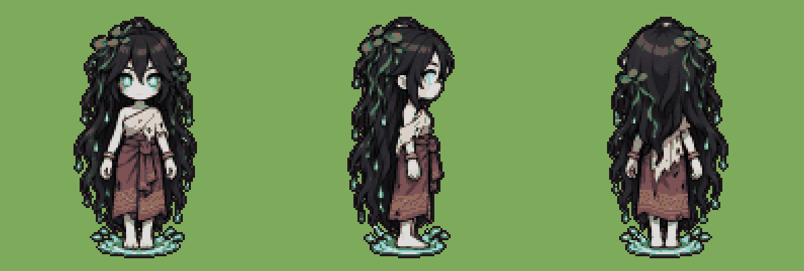
พรายน้ำ phrai
phrai_walk.pngเสร็จแล้ว
Animation frames for a 2D action game, ONE picture. The monster is the pale Thai river water spirit with very long dripping black hair, exactly as in the attached picture: same face, colours, outfit and proportions, same art style (clean chibi cel-shaded illustration, thick dark outlines, flat colours). Side view facing RIGHT in every frame, like the middle view of the attached picture. Action: a slow eerie glide forward, the long hair swaying, water dripping. A smooth loop: frame 6 flows back into frame 1. It walks in place (it does not travel across the cells). LAYOUT: 6 frames in a 3 x 2 grid, read left to right, top row first. Each frame sits in its own square cell of equal size with empty white space around the figure; nothing crosses into the next cell; the whole body stays inside its cell. Same scale in every frame (the same size as in frame 1); the feet (or the lowest point) on the same ground line in every cell. Every frame must be a clearly DIFFERENT pose. Plain pure white background, no grid lines, no numbers, no text, no shadow, no ground, no effects, no motion lines, no dust. Picture size 1536x1024 (each cell 512x512). Keep the full generated size. Do ONLY this one picture now.
phrai_attack.pngเสร็จแล้ว
Animation frames for a 2D action game, ONE picture. The monster is the pale Thai river water spirit with very long dripping black hair, exactly as in the attached picture: same face, colours, outfit and proportions, same art style (clean chibi cel-shaded illustration, thick dark outlines, flat colours). Side view facing RIGHT in every frame, like the middle view of the attached picture. Action: she leans back, then lunges forward reaching with both pale hands while her long hair whips forward (furthest reach in frame 4), then drifts back. Frames 1 and 6 show the ready pose; frames 2-3 are the wind-up, frame 4 is the hit, frame 5 the follow-through. LAYOUT: 6 frames in a 3 x 2 grid, read left to right, top row first. Each frame sits in its own square cell of equal size with empty white space around the figure; nothing crosses into the next cell; the whole body stays inside its cell. Same scale in every frame (the same size as in frame 1); the feet (or the lowest point) on the same ground line in every cell. Every frame must be a clearly DIFFERENT pose. Plain pure white background, no grid lines, no numbers, no text, no shadow, no ground, no effects, no motion lines, no dust. Picture size 1536x1024 (each cell 512x512). Keep the full generated size. Do ONLY this one picture now.
phrai_death.pngเสร็จแล้ว
Animation frames for a 2D action game, ONE picture. The monster is the pale Thai river water spirit with very long dripping black hair, exactly as in the attached picture: same face, colours, outfit and proportions, same art style (clean chibi cel-shaded illustration, thick dark outlines, flat colours). Side view facing RIGHT in every frame, like the middle view of the attached picture. Action: she gets hit, recoils, sinks down and melts into a puddle of water with her hair spread out in the last frame. LAYOUT: 6 frames in a 3 x 2 grid, read left to right, top row first. Each frame sits in its own square cell of equal size with empty white space around the figure; nothing crosses into the next cell; the whole body stays inside its cell. Same scale in every frame (the same size as in frame 1); the feet (or the lowest point) on the same ground line in every cell. Every frame must be a clearly DIFFERENT pose. Plain pure white background, no grid lines, no numbers, no text, no shadow, no ground, no effects, no motion lines, no dust. Picture size 1536x1024 (each cell 512x512). Keep the full generated size. Do ONLY this one picture now.
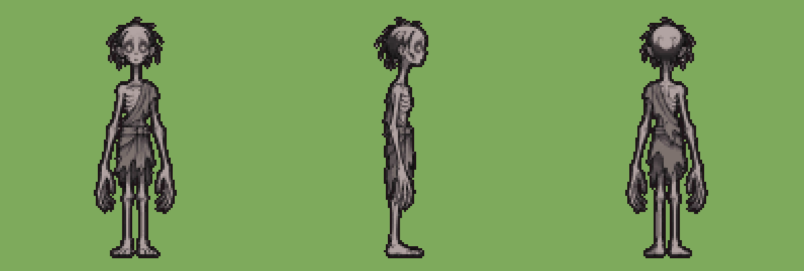
เปรต pret
pret_walk.pngเสร็จแล้ว
Animation frames for a 2D action game, ONE picture. The monster is the extremely tall thin Thai hungry ghost, exactly as in the attached picture: same face, colours, outfit and proportions, same art style (clean chibi cel-shaded illustration, thick dark outlines, flat colours). Side view facing RIGHT in every frame, like the middle view of the attached picture. Action: a slow swaying walk on long thin legs, the long arms hanging and swinging. A smooth loop: frame 6 flows back into frame 1. It walks in place (it does not travel across the cells). LAYOUT: 6 frames in a 3 x 2 grid, read left to right, top row first. Each frame sits in its own square cell of equal size with empty white space around the figure; nothing crosses into the next cell; the whole body stays inside its cell. Same scale in every frame (the same size as in frame 1); the feet (or the lowest point) on the same ground line in every cell. Every frame must be a clearly DIFFERENT pose. Plain pure white background, no grid lines, no numbers, no text, no shadow, no ground, no effects, no motion lines, no dust. Picture size 1536x1024 (each cell 512x512). Keep the full generated size. Do ONLY this one picture now.
pret_attack.pngเสร็จแล้ว
Animation frames for a 2D action game, ONE picture. The monster is the extremely tall thin Thai hungry ghost, exactly as in the attached picture: same face, colours, outfit and proportions, same art style (clean chibi cel-shaded illustration, thick dark outlines, flat colours). Side view facing RIGHT in every frame, like the middle view of the attached picture. Action: it bends down and reaches far forward with both very long thin arms to grab (furthest reach in frame 4), then straightens up. Frames 1 and 6 show the ready pose; frames 2-3 are the wind-up, frame 4 is the hit, frame 5 the follow-through. LAYOUT: 6 frames in a 3 x 2 grid, read left to right, top row first. Each frame sits in its own square cell of equal size with empty white space around the figure; nothing crosses into the next cell; the whole body stays inside its cell. Same scale in every frame (the same size as in frame 1); the feet (or the lowest point) on the same ground line in every cell. Every frame must be a clearly DIFFERENT pose. Plain pure white background, no grid lines, no numbers, no text, no shadow, no ground, no effects, no motion lines, no dust. Picture size 1536x1024 (each cell 512x512). Keep the full generated size. Do ONLY this one picture now.
pret_death.pngเสร็จแล้ว
Animation frames for a 2D action game, ONE picture. The monster is the extremely tall thin Thai hungry ghost, exactly as in the attached picture: same face, colours, outfit and proportions, same art style (clean chibi cel-shaded illustration, thick dark outlines, flat colours). Side view facing RIGHT in every frame, like the middle view of the attached picture. Action: it gets hit, folds up at the knees and collapses in a heap of long thin limbs, lying still in the last frame. LAYOUT: 6 frames in a 3 x 2 grid, read left to right, top row first. Each frame sits in its own square cell of equal size with empty white space around the figure; nothing crosses into the next cell; the whole body stays inside its cell. Same scale in every frame (the same size as in frame 1); the feet (or the lowest point) on the same ground line in every cell. Every frame must be a clearly DIFFERENT pose. Plain pure white background, no grid lines, no numbers, no text, no shadow, no ground, no effects, no motion lines, no dust. Picture size 1536x1024 (each cell 512x512). Keep the full generated size. Do ONLY this one picture now.
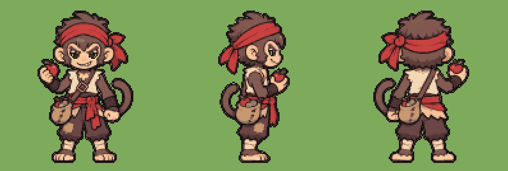
ลิงโจร monkey
monkey_walk.pngเสร็จแล้ว
Animation frames for a 2D action game, ONE picture. The monster is the mischievous macaque bandit with the red headcloth and the bag of fruit, exactly as in the attached picture: same face, colours, outfit and proportions, same art style (clean chibi cel-shaded illustration, thick dark outlines, flat colours). Side view facing RIGHT in every frame, like the middle view of the attached picture. Action: a cheeky bouncy walk, tail swinging, the bag bouncing on the hip. A smooth loop: frame 6 flows back into frame 1. It walks in place (it does not travel across the cells). LAYOUT: 6 frames in a 3 x 2 grid, read left to right, top row first. Each frame sits in its own square cell of equal size with empty white space around the figure; nothing crosses into the next cell; the whole body stays inside its cell. Same scale in every frame (the same size as in frame 1); the feet (or the lowest point) on the same ground line in every cell. Every frame must be a clearly DIFFERENT pose. Plain pure white background, no grid lines, no numbers, no text, no shadow, no ground, no effects, no motion lines, no dust. Picture size 1536x1024 (each cell 512x512). Keep the full generated size. Do ONLY this one picture now.
monkey_attack.pngเสร็จแล้ว
Animation frames for a 2D action game, ONE picture. The monster is the mischievous macaque bandit with the red headcloth and the bag of fruit, exactly as in the attached picture: same face, colours, outfit and proportions, same art style (clean chibi cel-shaded illustration, thick dark outlines, flat colours). Side view facing RIGHT in every frame, like the middle view of the attached picture. Action: it pulls a fruit from the bag, winds up and throws it overhand forward (the fruit leaves its hand in frame 4), then laughs in the ready pose. Frames 1 and 6 show the ready pose; frames 2-3 are the wind-up, frame 4 is the hit, frame 5 the follow-through. LAYOUT: 6 frames in a 3 x 2 grid, read left to right, top row first. Each frame sits in its own square cell of equal size with empty white space around the figure; nothing crosses into the next cell; the whole body stays inside its cell. Same scale in every frame (the same size as in frame 1); the feet (or the lowest point) on the same ground line in every cell. Every frame must be a clearly DIFFERENT pose. Plain pure white background, no grid lines, no numbers, no text, no shadow, no ground, no effects, no motion lines, no dust. Picture size 1536x1024 (each cell 512x512). Keep the full generated size. Do ONLY this one picture now.
monkey_death.pngเสร็จแล้ว
Animation frames for a 2D action game, ONE picture. The monster is the mischievous macaque bandit with the red headcloth and the bag of fruit, exactly as in the attached picture: same face, colours, outfit and proportions, same art style (clean chibi cel-shaded illustration, thick dark outlines, flat colours). Side view facing RIGHT in every frame, like the middle view of the attached picture. Action: it gets hit, tumbles backward, fruit spilling from the bag, and lies still on its back in the last frame. LAYOUT: 6 frames in a 3 x 2 grid, read left to right, top row first. Each frame sits in its own square cell of equal size with empty white space around the figure; nothing crosses into the next cell; the whole body stays inside its cell. Same scale in every frame (the same size as in frame 1); the feet (or the lowest point) on the same ground line in every cell. Every frame must be a clearly DIFFERENT pose. Plain pure white background, no grid lines, no numbers, no text, no shadow, no ground, no effects, no motion lines, no dust. Picture size 1536x1024 (each cell 512x512). Keep the full generated size. Do ONLY this one picture now.
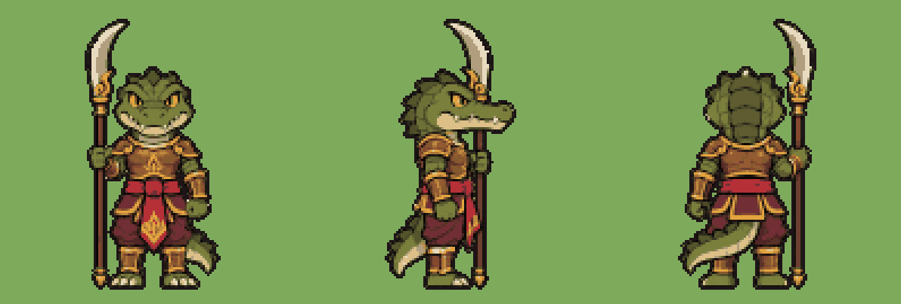
ทหารจระเข้ croc_guard
croc_guard_walk.pngเสร็จแล้ว
Animation frames for a 2D action game, ONE picture. The monster is the crocodile-headed warrior with the bronze armour and the long Thai glaive, exactly as in the attached picture: same face, colours, outfit and proportions, same art style (clean chibi cel-shaded illustration, thick dark outlines, flat colours). Side view facing RIGHT in every frame, like the middle view of the attached picture. Action: a heavy marching walk, the glaive held upright, the tail swaying behind. A smooth loop: frame 6 flows back into frame 1. It walks in place (it does not travel across the cells). LAYOUT: 6 frames in a 3 x 2 grid, read left to right, top row first. Each frame sits in its own square cell of equal size with empty white space around the figure; nothing crosses into the next cell; the whole body stays inside its cell. Same scale in every frame (the same size as in frame 1); the feet (or the lowest point) on the same ground line in every cell. Every frame must be a clearly DIFFERENT pose. Plain pure white background, no grid lines, no numbers, no text, no shadow, no ground, no effects, no motion lines, no dust. Picture size 1536x1024 (each cell 512x512). Keep the full generated size. Do ONLY this one picture now.
croc_guard_attack.pngเสร็จแล้ว
Animation frames for a 2D action game, ONE picture. The monster is the crocodile-headed warrior with the bronze armour and the long Thai glaive, exactly as in the attached picture: same face, colours, outfit and proportions, same art style (clean chibi cel-shaded illustration, thick dark outlines, flat colours). Side view facing RIGHT in every frame, like the middle view of the attached picture. Action: it lowers the glaive and thrusts it forward with a step (the blade furthest forward in frame 4), then pulls it back upright. Frames 1 and 6 show the ready pose; frames 2-3 are the wind-up, frame 4 is the hit, frame 5 the follow-through. LAYOUT: 6 frames in a 3 x 2 grid, read left to right, top row first. Each frame sits in its own square cell of equal size with empty white space around the figure; nothing crosses into the next cell; the whole body stays inside its cell. Same scale in every frame (the same size as in frame 1); the feet (or the lowest point) on the same ground line in every cell. Every frame must be a clearly DIFFERENT pose. Plain pure white background, no grid lines, no numbers, no text, no shadow, no ground, no effects, no motion lines, no dust. Picture size 1536x1024 (each cell 512x512). Keep the full generated size. Do ONLY this one picture now.
croc_guard_death.pngเสร็จแล้ว
Animation frames for a 2D action game, ONE picture. The monster is the crocodile-headed warrior with the bronze armour and the long Thai glaive, exactly as in the attached picture: same face, colours, outfit and proportions, same art style (clean chibi cel-shaded illustration, thick dark outlines, flat colours). Side view facing RIGHT in every frame, like the middle view of the attached picture. Action: it gets hit, staggers, drops the glaive and falls forward onto its belly, lying still in the last frame. LAYOUT: 6 frames in a 3 x 2 grid, read left to right, top row first. Each frame sits in its own square cell of equal size with empty white space around the figure; nothing crosses into the next cell; the whole body stays inside its cell. Same scale in every frame (the same size as in frame 1); the feet (or the lowest point) on the same ground line in every cell. Every frame must be a clearly DIFFERENT pose. Plain pure white background, no grid lines, no numbers, no text, no shadow, no ground, no effects, no motion lines, no dust. Picture size 1536x1024 (each cell 512x512). Keep the full generated size. Do ONLY this one picture now.
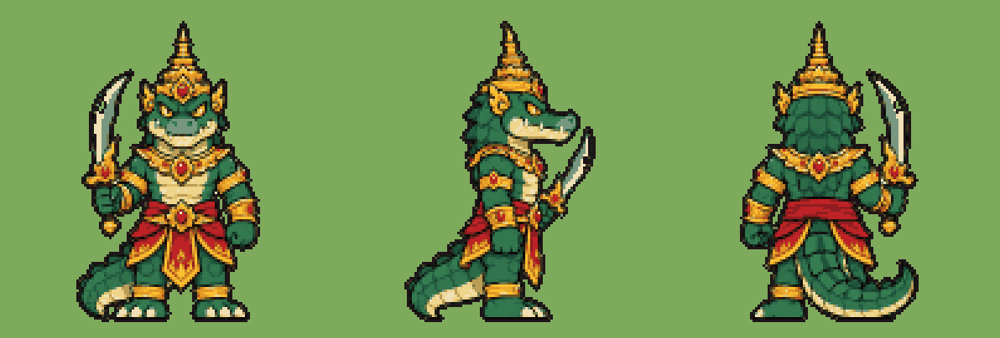
บอสชาละวัน boss_chalawan
boss_chalawan_walk.pngเสร็จแล้ว
Animation frames for a 2D action game, ONE picture. The monster is Chalawan the crocodile king with the gold Thai crown and two curved swords, exactly as in the attached picture: same face, colours, outfit and proportions, same art style (clean chibi cel-shaded illustration, thick dark outlines, flat colours). Side view facing RIGHT in every frame, like the middle view of the attached picture. Action: a proud heavy walk, the long tail swaying, both swords held ready. A smooth loop: frame 6 flows back into frame 1. It walks in place (it does not travel across the cells). LAYOUT: 6 frames in a 3 x 2 grid, read left to right, top row first. Each frame sits in its own square cell of equal size with empty white space around the figure; nothing crosses into the next cell; the whole body stays inside its cell. Same scale in every frame (the same size as in frame 1); the feet (or the lowest point) on the same ground line in every cell. Every frame must be a clearly DIFFERENT pose. Plain pure white background, no grid lines, no numbers, no text, no shadow, no ground, no effects, no motion lines, no dust. Picture size 1536x1024 (each cell 512x512). Keep the full generated size. Do ONLY this one picture now.
boss_chalawan_attack.pngเสร็จแล้ว
Animation frames for a 2D action game, ONE picture. The monster is Chalawan the crocodile king with the gold Thai crown and two curved swords, exactly as in the attached picture: same face, colours, outfit and proportions, same art style (clean chibi cel-shaded illustration, thick dark outlines, flat colours). Side view facing RIGHT in every frame, like the middle view of the attached picture. Action: he raises both curved swords, then steps forward and slashes them down crossing in front of him (the swords furthest forward in frame 4), then returns to the ready stance. Frames 1 and 6 show the ready pose; frames 2-3 are the wind-up, frame 4 is the hit, frame 5 the follow-through. LAYOUT: 6 frames in a 3 x 2 grid, read left to right, top row first. Each frame sits in its own square cell of equal size with empty white space around the figure; nothing crosses into the next cell; the whole body stays inside its cell. Same scale in every frame (the same size as in frame 1); the feet (or the lowest point) on the same ground line in every cell. Every frame must be a clearly DIFFERENT pose. Plain pure white background, no grid lines, no numbers, no text, no shadow, no ground, no effects, no motion lines, no dust. Picture size 1536x1024 (each cell 512x512). Keep the full generated size. Do ONLY this one picture now.
boss_chalawan_death.pngเสร็จแล้ว
Animation frames for a 2D action game, ONE picture. The monster is Chalawan the crocodile king with the gold Thai crown and two curved swords, exactly as in the attached picture: same face, colours, outfit and proportions, same art style (clean chibi cel-shaded illustration, thick dark outlines, flat colours). Side view facing RIGHT in every frame, like the middle view of the attached picture. Action: he gets hit, roars, drops to his knees, the swords fall and he crashes onto his side, the crown rolling off, in the last frame. LAYOUT: 6 frames in a 3 x 2 grid, read left to right, top row first. Each frame sits in its own square cell of equal size with empty white space around the figure; nothing crosses into the next cell; the whole body stays inside its cell. Same scale in every frame (the same size as in frame 1); the feet (or the lowest point) on the same ground line in every cell. Every frame must be a clearly DIFFERENT pose. Plain pure white background, no grid lines, no numbers, no text, no shadow, no ground, no effects, no motion lines, no dust. Picture size 1536x1024 (each cell 512x512). Keep the full generated size. Do ONLY this one picture now.
 ผีกระโดดจีน
ผีกระโดดจีน jiangshi

jiangshi_walk.png
Animation frames for a 2D action game, ONE picture. The monster is the Chinese hopping vampire with the talisman on its forehead, exactly as in the attached picture: same face, colours, outfit and proportions, same art style (clean chibi cel-shaded illustration, thick dark outlines, flat colours). Side view facing RIGHT in every frame, like the middle view of the attached picture. Action: it hops forward with both feet together, stiff body, arms stretched out in front, the talisman flapping at each hop. A smooth loop: frame 6 flows back into frame 1. It walks in place (it does not travel across the cells). LAYOUT: 6 frames in a 3 x 2 grid, read left to right, top row first. Each frame sits in its own square cell of equal size with empty white space around the figure; nothing crosses into the next cell; the whole body stays inside its cell. Same scale in every frame (the same size as in frame 1); the feet (or the lowest point) on the same ground line in every cell. Every frame must be a clearly DIFFERENT pose. Plain pure white background, no grid lines, no numbers, no text, no shadow, no ground, no effects, no motion lines, no dust. Picture size 1536x1024 (each cell 512x512). Keep the full generated size. Do ONLY this one picture now.
jiangshi_attack.png
Animation frames for a 2D action game, ONE picture. The monster is the Chinese hopping vampire with the talisman on its forehead, exactly as in the attached picture: same face, colours, outfit and proportions, same art style (clean chibi cel-shaded illustration, thick dark outlines, flat colours). Side view facing RIGHT in every frame, like the middle view of the attached picture. Action: it crouches, then makes a big stiff hop forward and claws down with both outstretched arms (the claws furthest forward in frame 4), then lands back. Frames 1 and 6 show the ready pose; frames 2-3 are the wind-up, frame 4 is the hit, frame 5 the follow-through. LAYOUT: 6 frames in a 3 x 2 grid, read left to right, top row first. Each frame sits in its own square cell of equal size with empty white space around the figure; nothing crosses into the next cell; the whole body stays inside its cell. Same scale in every frame (the same size as in frame 1); the feet (or the lowest point) on the same ground line in every cell. Every frame must be a clearly DIFFERENT pose. Plain pure white background, no grid lines, no numbers, no text, no shadow, no ground, no effects, no motion lines, no dust. Picture size 1536x1024 (each cell 512x512). Keep the full generated size. Do ONLY this one picture now.
jiangshi_death.png
Animation frames for a 2D action game, ONE picture. The monster is the Chinese hopping vampire with the talisman on its forehead, exactly as in the attached picture: same face, colours, outfit and proportions, same art style (clean chibi cel-shaded illustration, thick dark outlines, flat colours). Side view facing RIGHT in every frame, like the middle view of the attached picture. Action: it gets hit, the talisman flies off, it goes rigid and topples straight over backward like a plank, lying still in the last frame. LAYOUT: 6 frames in a 3 x 2 grid, read left to right, top row first. Each frame sits in its own square cell of equal size with empty white space around the figure; nothing crosses into the next cell; the whole body stays inside its cell. Same scale in every frame (the same size as in frame 1); the feet (or the lowest point) on the same ground line in every cell. Every frame must be a clearly DIFFERENT pose. Plain pure white background, no grid lines, no numbers, no text, no shadow, no ground, no effects, no motion lines, no dust. Picture size 1536x1024 (each cell 512x512). Keep the full generated size. Do ONLY this one picture now.
 ตุ๊กตากระดาษ
ตุ๊กตากระดาษ paper_doll

paper_doll_walk.png
Animation frames for a 2D action game, ONE picture. The monster is the small paper effigy servant, exactly as in the attached picture: same face, colours, outfit and proportions, same art style (clean chibi cel-shaded illustration, thick dark outlines, flat colours). Side view facing RIGHT in every frame, like the middle view of the attached picture. Action: it scurries forward in quick light steps, the paper sleeves fluttering. A smooth loop: frame 6 flows back into frame 1. It walks in place (it does not travel across the cells). LAYOUT: 6 frames in a 3 x 2 grid, read left to right, top row first. Each frame sits in its own square cell of equal size with empty white space around the figure; nothing crosses into the next cell; the whole body stays inside its cell. Same scale in every frame (the same size as in frame 1); the feet (or the lowest point) on the same ground line in every cell. Every frame must be a clearly DIFFERENT pose. Plain pure white background, no grid lines, no numbers, no text, no shadow, no ground, no effects, no motion lines, no dust. Picture size 1536x1024 (each cell 512x512). Keep the full generated size. Do ONLY this one picture now.
paper_doll_attack.png
Animation frames for a 2D action game, ONE picture. The monster is the small paper effigy servant, exactly as in the attached picture: same face, colours, outfit and proportions, same art style (clean chibi cel-shaded illustration, thick dark outlines, flat colours). Side view facing RIGHT in every frame, like the middle view of the attached picture. Action: it leans back, then lunges forward slicing with the paper fan (the fan furthest forward in frame 4), then pulls back. Frames 1 and 6 show the ready pose; frames 2-3 are the wind-up, frame 4 is the hit, frame 5 the follow-through. LAYOUT: 6 frames in a 3 x 2 grid, read left to right, top row first. Each frame sits in its own square cell of equal size with empty white space around the figure; nothing crosses into the next cell; the whole body stays inside its cell. Same scale in every frame (the same size as in frame 1); the feet (or the lowest point) on the same ground line in every cell. Every frame must be a clearly DIFFERENT pose. Plain pure white background, no grid lines, no numbers, no text, no shadow, no ground, no effects, no motion lines, no dust. Picture size 1536x1024 (each cell 512x512). Keep the full generated size. Do ONLY this one picture now.
paper_doll_death.png
Animation frames for a 2D action game, ONE picture. The monster is the small paper effigy servant, exactly as in the attached picture: same face, colours, outfit and proportions, same art style (clean chibi cel-shaded illustration, thick dark outlines, flat colours). Side view facing RIGHT in every frame, like the middle view of the attached picture. Action: it gets hit, tears, crumples up into a ball of paper and falls flat in the last frame. LAYOUT: 6 frames in a 3 x 2 grid, read left to right, top row first. Each frame sits in its own square cell of equal size with empty white space around the figure; nothing crosses into the next cell; the whole body stays inside its cell. Same scale in every frame (the same size as in frame 1); the feet (or the lowest point) on the same ground line in every cell. Every frame must be a clearly DIFFERENT pose. Plain pure white background, no grid lines, no numbers, no text, no shadow, no ground, no effects, no motion lines, no dust. Picture size 1536x1024 (each cell 512x512). Keep the full generated size. Do ONLY this one picture now.
 ทหารดินเผานักธนู
ทหารดินเผานักธนู terracotta_archer

terracotta_archer_walk.png
Animation frames for a 2D action game, ONE picture. The monster is the clay soldier archer with the crossbow, exactly as in the attached picture: same face, colours, outfit and proportions, same art style (clean chibi cel-shaded illustration, thick dark outlines, flat colours). Side view facing RIGHT in every frame, like the middle view of the attached picture. Action: a stiff marching walk, the crossbow held across the body. A smooth loop: frame 6 flows back into frame 1. It walks in place (it does not travel across the cells). LAYOUT: 6 frames in a 3 x 2 grid, read left to right, top row first. Each frame sits in its own square cell of equal size with empty white space around the figure; nothing crosses into the next cell; the whole body stays inside its cell. Same scale in every frame (the same size as in frame 1); the feet (or the lowest point) on the same ground line in every cell. Every frame must be a clearly DIFFERENT pose. Plain pure white background, no grid lines, no numbers, no text, no shadow, no ground, no effects, no motion lines, no dust. Picture size 1536x1024 (each cell 512x512). Keep the full generated size. Do ONLY this one picture now.
terracotta_archer_attack.png
Animation frames for a 2D action game, ONE picture. The monster is the clay soldier archer with the crossbow, exactly as in the attached picture: same face, colours, outfit and proportions, same art style (clean chibi cel-shaded illustration, thick dark outlines, flat colours). Side view facing RIGHT in every frame, like the middle view of the attached picture. Action: it raises the crossbow, aims forward, shoots (the bolt leaves the frame, the crossbow kicks back in frame 4), then lowers it; bolts always point forward with the head at the front. Frames 1 and 6 show the ready pose; frames 2-3 are the wind-up, frame 4 is the hit, frame 5 the follow-through. LAYOUT: 6 frames in a 3 x 2 grid, read left to right, top row first. Each frame sits in its own square cell of equal size with empty white space around the figure; nothing crosses into the next cell; the whole body stays inside its cell. Same scale in every frame (the same size as in frame 1); the feet (or the lowest point) on the same ground line in every cell. Every frame must be a clearly DIFFERENT pose. Plain pure white background, no grid lines, no numbers, no text, no shadow, no ground, no effects, no motion lines, no dust. Picture size 1536x1024 (each cell 512x512). Keep the full generated size. Do ONLY this one picture now.
terracotta_archer_death.png
Animation frames for a 2D action game, ONE picture. The monster is the clay soldier archer with the crossbow, exactly as in the attached picture: same face, colours, outfit and proportions, same art style (clean chibi cel-shaded illustration, thick dark outlines, flat colours). Side view facing RIGHT in every frame, like the middle view of the attached picture. Action: it gets hit, cracks spread over its body and it crumbles into a pile of clay pieces in the last frame. LAYOUT: 6 frames in a 3 x 2 grid, read left to right, top row first. Each frame sits in its own square cell of equal size with empty white space around the figure; nothing crosses into the next cell; the whole body stays inside its cell. Same scale in every frame (the same size as in frame 1); the feet (or the lowest point) on the same ground line in every cell. Every frame must be a clearly DIFFERENT pose. Plain pure white background, no grid lines, no numbers, no text, no shadow, no ground, no effects, no motion lines, no dust. Picture size 1536x1024 (each cell 512x512). Keep the full generated size. Do ONLY this one picture now.
 นายพลดินเผา
นายพลดินเผา terracotta_general

terracotta_general_walk.png
Animation frames for a 2D action game, ONE picture. The monster is the big clay general with the bronze halberd, exactly as in the attached picture: same face, colours, outfit and proportions, same art style (clean chibi cel-shaded illustration, thick dark outlines, flat colours). Side view facing RIGHT in every frame, like the middle view of the attached picture. Action: a heavy slow march, the halberd held upright, the armour plates clacking. A smooth loop: frame 6 flows back into frame 1. It walks in place (it does not travel across the cells). LAYOUT: 6 frames in a 3 x 2 grid, read left to right, top row first. Each frame sits in its own square cell of equal size with empty white space around the figure; nothing crosses into the next cell; the whole body stays inside its cell. Same scale in every frame (the same size as in frame 1); the feet (or the lowest point) on the same ground line in every cell. Every frame must be a clearly DIFFERENT pose. Plain pure white background, no grid lines, no numbers, no text, no shadow, no ground, no effects, no motion lines, no dust. Picture size 1536x1024 (each cell 512x512). Keep the full generated size. Do ONLY this one picture now.
terracotta_general_attack.png
Animation frames for a 2D action game, ONE picture. The monster is the big clay general with the bronze halberd, exactly as in the attached picture: same face, colours, outfit and proportions, same art style (clean chibi cel-shaded illustration, thick dark outlines, flat colours). Side view facing RIGHT in every frame, like the middle view of the attached picture. Action: it raises the halberd high, then swings it down and forward in a big chop (the blade furthest forward in frame 4), then lifts it back up. Frames 1 and 6 show the ready pose; frames 2-3 are the wind-up, frame 4 is the hit, frame 5 the follow-through. LAYOUT: 6 frames in a 3 x 2 grid, read left to right, top row first. Each frame sits in its own square cell of equal size with empty white space around the figure; nothing crosses into the next cell; the whole body stays inside its cell. Same scale in every frame (the same size as in frame 1); the feet (or the lowest point) on the same ground line in every cell. Every frame must be a clearly DIFFERENT pose. Plain pure white background, no grid lines, no numbers, no text, no shadow, no ground, no effects, no motion lines, no dust. Picture size 1536x1024 (each cell 512x512). Keep the full generated size. Do ONLY this one picture now.
terracotta_general_death.png
Animation frames for a 2D action game, ONE picture. The monster is the big clay general with the bronze halberd, exactly as in the attached picture: same face, colours, outfit and proportions, same art style (clean chibi cel-shaded illustration, thick dark outlines, flat colours). Side view facing RIGHT in every frame, like the middle view of the attached picture. Action: it gets hit, cracks, drops the halberd and breaks apart into big clay chunks in the last frame. LAYOUT: 6 frames in a 3 x 2 grid, read left to right, top row first. Each frame sits in its own square cell of equal size with empty white space around the figure; nothing crosses into the next cell; the whole body stays inside its cell. Same scale in every frame (the same size as in frame 1); the feet (or the lowest point) on the same ground line in every cell. Every frame must be a clearly DIFFERENT pose. Plain pure white background, no grid lines, no numbers, no text, no shadow, no ground, no effects, no motion lines, no dust. Picture size 1536x1024 (each cell 512x512). Keep the full generated size. Do ONLY this one picture now.
 ปีศาจจิ้งจอก
ปีศาจจิ้งจอก fox_spirit

fox_spirit_walk.png
Animation frames for a 2D action game, ONE picture. The monster is the white three-tailed fox demon, exactly as in the attached picture: same face, colours, outfit and proportions, same art style (clean chibi cel-shaded illustration, thick dark outlines, flat colours). Side view facing RIGHT in every frame, like the middle view of the attached picture. Action: a light prancing walk on its hind legs, the three tails swaying. A smooth loop: frame 6 flows back into frame 1. It walks in place (it does not travel across the cells). LAYOUT: 6 frames in a 3 x 2 grid, read left to right, top row first. Each frame sits in its own square cell of equal size with empty white space around the figure; nothing crosses into the next cell; the whole body stays inside its cell. Same scale in every frame (the same size as in frame 1); the feet (or the lowest point) on the same ground line in every cell. Every frame must be a clearly DIFFERENT pose. Plain pure white background, no grid lines, no numbers, no text, no shadow, no ground, no effects, no motion lines, no dust. Picture size 1536x1024 (each cell 512x512). Keep the full generated size. Do ONLY this one picture now.
fox_spirit_attack.png
Animation frames for a 2D action game, ONE picture. The monster is the white three-tailed fox demon, exactly as in the attached picture: same face, colours, outfit and proportions, same art style (clean chibi cel-shaded illustration, thick dark outlines, flat colours). Side view facing RIGHT in every frame, like the middle view of the attached picture. Action: it raises one paw gathering blue fox-fire, then flicks the paw forward to throw it (the paw furthest forward in frame 4), then settles back. Frames 1 and 6 show the ready pose; frames 2-3 are the wind-up, frame 4 is the hit, frame 5 the follow-through. LAYOUT: 6 frames in a 3 x 2 grid, read left to right, top row first. Each frame sits in its own square cell of equal size with empty white space around the figure; nothing crosses into the next cell; the whole body stays inside its cell. Same scale in every frame (the same size as in frame 1); the feet (or the lowest point) on the same ground line in every cell. Every frame must be a clearly DIFFERENT pose. Plain pure white background, no grid lines, no numbers, no text, no shadow, no ground, no effects, no motion lines, no dust. Picture size 1536x1024 (each cell 512x512). Keep the full generated size. Do ONLY this one picture now.
fox_spirit_death.png
Animation frames for a 2D action game, ONE picture. The monster is the white three-tailed fox demon, exactly as in the attached picture: same face, colours, outfit and proportions, same art style (clean chibi cel-shaded illustration, thick dark outlines, flat colours). Side view facing RIGHT in every frame, like the middle view of the attached picture. Action: it gets hit, yelps, spins and collapses onto its side, its tails limp, in the last frame. LAYOUT: 6 frames in a 3 x 2 grid, read left to right, top row first. Each frame sits in its own square cell of equal size with empty white space around the figure; nothing crosses into the next cell; the whole body stays inside its cell. Same scale in every frame (the same size as in frame 1); the feet (or the lowest point) on the same ground line in every cell. Every frame must be a clearly DIFFERENT pose. Plain pure white background, no grid lines, no numbers, no text, no shadow, no ground, no effects, no motion lines, no dust. Picture size 1536x1024 (each cell 512x512). Keep the full generated size. Do ONLY this one picture now.
 ปีศาจคางคก
ปีศาจคางคก toad_demon

toad_demon_walk.png
Animation frames for a 2D action game, ONE picture. The monster is the fat toad demon with the long tongue, exactly as in the attached picture: same face, colours, outfit and proportions, same art style (clean chibi cel-shaded illustration, thick dark outlines, flat colours). Side view facing RIGHT in every frame, like the middle view of the attached picture. Action: a heavy waddle forward, belly bouncing. A smooth loop: frame 6 flows back into frame 1. It walks in place (it does not travel across the cells). LAYOUT: 6 frames in a 3 x 2 grid, read left to right, top row first. Each frame sits in its own square cell of equal size with empty white space around the figure; nothing crosses into the next cell; the whole body stays inside its cell. Same scale in every frame (the same size as in frame 1); the feet (or the lowest point) on the same ground line in every cell. Every frame must be a clearly DIFFERENT pose. Plain pure white background, no grid lines, no numbers, no text, no shadow, no ground, no effects, no motion lines, no dust. Picture size 1536x1024 (each cell 512x512). Keep the full generated size. Do ONLY this one picture now.
toad_demon_attack.png
Animation frames for a 2D action game, ONE picture. The monster is the fat toad demon with the long tongue, exactly as in the attached picture: same face, colours, outfit and proportions, same art style (clean chibi cel-shaded illustration, thick dark outlines, flat colours). Side view facing RIGHT in every frame, like the middle view of the attached picture. Action: it puffs up its throat, then shoots its long sticky tongue straight forward (the tongue at full length in frame 4), then pulls it back in. Frames 1 and 6 show the ready pose; frames 2-3 are the wind-up, frame 4 is the hit, frame 5 the follow-through. LAYOUT: 6 frames in a 3 x 2 grid, read left to right, top row first. Each frame sits in its own square cell of equal size with empty white space around the figure; nothing crosses into the next cell; the whole body stays inside its cell. Same scale in every frame (the same size as in frame 1); the feet (or the lowest point) on the same ground line in every cell. Every frame must be a clearly DIFFERENT pose. Plain pure white background, no grid lines, no numbers, no text, no shadow, no ground, no effects, no motion lines, no dust. Picture size 1536x1024 (each cell 512x512). Keep the full generated size. Do ONLY this one picture now.
toad_demon_death.png
Animation frames for a 2D action game, ONE picture. The monster is the fat toad demon with the long tongue, exactly as in the attached picture: same face, colours, outfit and proportions, same art style (clean chibi cel-shaded illustration, thick dark outlines, flat colours). Side view facing RIGHT in every frame, like the middle view of the attached picture. Action: it gets hit, deflates, flops onto its back with its legs up, lying still in the last frame. LAYOUT: 6 frames in a 3 x 2 grid, read left to right, top row first. Each frame sits in its own square cell of equal size with empty white space around the figure; nothing crosses into the next cell; the whole body stays inside its cell. Same scale in every frame (the same size as in frame 1); the feet (or the lowest point) on the same ground line in every cell. Every frame must be a clearly DIFFERENT pose. Plain pure white background, no grid lines, no numbers, no text, no shadow, no ground, no effects, no motion lines, no dust. Picture size 1536x1024 (each cell 512x512). Keep the full generated size. Do ONLY this one picture now.
 บอสเหนียนโซ่ว
บอสเหนียนโซ่ว boss_nian


boss_nian_walk.png
Animation frames for a 2D action game, ONE picture. The monster is Nian, the huge red and gold New Year beast on four legs, exactly as in the attached picture: same face, colours, outfit and proportions, same art style (clean chibi cel-shaded illustration, thick dark outlines, flat colours). Side view facing RIGHT in every frame, like the middle view of the attached picture. Action: a heavy prowling walk on four legs, the mane bouncing. A smooth loop: frame 6 flows back into frame 1. It walks in place (it does not travel across the cells). LAYOUT: 6 frames in a 3 x 2 grid, read left to right, top row first. Each frame sits in its own square cell of equal size with empty white space around the figure; nothing crosses into the next cell; the whole body stays inside its cell. Same scale in every frame (the same size as in frame 1); the feet (or the lowest point) on the same ground line in every cell. Every frame must be a clearly DIFFERENT pose. Plain pure white background, no grid lines, no numbers, no text, no shadow, no ground, no effects, no motion lines, no dust. Picture size 1536x1024 (each cell 512x512). Keep the full generated size. Do ONLY this one picture now.
boss_nian_attack.png
Animation frames for a 2D action game, ONE picture. The monster is Nian, the huge red and gold New Year beast on four legs, exactly as in the attached picture: same face, colours, outfit and proportions, same art style (clean chibi cel-shaded illustration, thick dark outlines, flat colours). Side view facing RIGHT in every frame, like the middle view of the attached picture. Action: it rears up on its hind legs, then slams down forward with both front paws and a roaring bite (furthest forward in frame 4), then steps back. Frames 1 and 6 show the ready pose; frames 2-3 are the wind-up, frame 4 is the hit, frame 5 the follow-through. LAYOUT: 6 frames in a 3 x 2 grid, read left to right, top row first. Each frame sits in its own square cell of equal size with empty white space around the figure; nothing crosses into the next cell; the whole body stays inside its cell. Same scale in every frame (the same size as in frame 1); the feet (or the lowest point) on the same ground line in every cell. Every frame must be a clearly DIFFERENT pose. Plain pure white background, no grid lines, no numbers, no text, no shadow, no ground, no effects, no motion lines, no dust. Picture size 1536x1024 (each cell 512x512). Keep the full generated size. Do ONLY this one picture now.
boss_nian_death.png
Animation frames for a 2D action game, ONE picture. The monster is Nian, the huge red and gold New Year beast on four legs, exactly as in the attached picture: same face, colours, outfit and proportions, same art style (clean chibi cel-shaded illustration, thick dark outlines, flat colours). Side view facing RIGHT in every frame, like the middle view of the attached picture. Action: it gets hit, staggers, its legs give way and it slumps to the ground, lying still in the last frame. LAYOUT: 6 frames in a 3 x 2 grid, read left to right, top row first. Each frame sits in its own square cell of equal size with empty white space around the figure; nothing crosses into the next cell; the whole body stays inside its cell. Same scale in every frame (the same size as in frame 1); the feet (or the lowest point) on the same ground line in every cell. Every frame must be a clearly DIFFERENT pose. Plain pure white background, no grid lines, no numbers, no text, no shadow, no ground, no effects, no motion lines, no dust. Picture size 1536x1024 (each cell 512x512). Keep the full generated size. Do ONLY this one picture now.